# data %>%
# group_by(YEAR, did_wfh) %>%
# dplyr::summarize(weightedcount=sum(PERWT),
# unweightedcount = n()) %>% #weighted
# mutate(pct_weighted = round(weightedcount/sum(weightedcount), digits = 3),
# pct_noweight = round(unweightedcount/sum(unweightedcount), digits = 3))
#valid percent BEFORE final filtering of observations (income greater than zero)
data %>%
filter(YEAR == 2019) %>%
topline(did_wfh_labels, weight = PERWT)
data %>%
filter(YEAR == 2021) %>%
topline(did_wfh_labels, weight = PERWT)3 Descriptive Statistics
251630 observations originally in ACS 2021 and 2019 1-year samples.
123,753 observations after removing those not in the labor force and with earned incomes less than or equal to zero.
18.2% of Illinois workers worked at home. 76.3% went to work using some form of transportation, 5.5% of observations were missing values.
- Valid percent: 19.2% of observations with responses did WFH and 80.8% of observations with responses did not WFH. This is the statistic we would use
- Increased from 5.3% of all workers that worked from home in 2019
3.1 Comparison of Women w/ & w/o Kids under 5
Women under 40 who could work from home in the occupation category with large amount of people who could work from home (Management, Business, Science & Arts, all SOC 2-digit codes < 30-0000)
Under5 is binary variable: 0 means no children under 5. 1 means at least 1 or more children under 5.
318,174 women in 2019 worked from home and 1,140,835 women in 2021 worked from home.
childttest2021<-joined %>%
filter(YEAR == 2021)%>%
filter(SEX == 2 & AGE < 40) %>%
filter(CanWorkFromHome == "Can WFH" & occ_2digits <30) %>%
mutate(under5 = ifelse(NCHLT5 > 0, 1, 0))
#write.csv(childttest2021, "with_kids_comparison.csv")
childttest2019<-joined %>%
filter(YEAR == 2019)%>%
filter(SEX == 2 & AGE < 40) %>%
filter(CanWorkFromHome == "Can WFH" & occ_2digits <30) %>%
mutate(under5 = ifelse(NCHLT5 > 0, 1, 0))
kidsdesign <- survey::svydesign(id = ~CLUSTER, strata = ~STRATA, weights = ~PERWT, data = childttest2021)
kidsdesign2 <- survey::svydesign(id = ~CLUSTER, strata = ~STRATA, weights = ~PERWT, data = childttest2019)
#withkids <- childttest %>% filter(under5 == 1)
#table(withkids$did_wfh_labels)
#nokids <- childttest %>% filter(under5==0)
#table(nokids$did_wfh_labels)
svytable(~under5+did_wfh_labels, kidsdesign) did_wfh_labels
under5 Did not WFH Did WFH
0 174904 91658
1 49846 29442svytable(~under5+did_wfh_labels, kidsdesign) %>% as_tibble() %>%
# group_by(did_wfh_labels) %>%
mutate(Prop = round(n/sum(n), digits =3))| under5 | did_wfh_labels | n | Prop |
| 0 | Did not WFH | 1.75e+05 | 0.506 |
| 1 | Did not WFH | 4.98e+04 | 0.144 |
| 0 | Did WFH | 9.17e+04 | 0.265 |
| 1 | Did WFH | 2.94e+04 | 0.085 |
svytable(~under5+did_wfh_labels, kidsdesign) %>% summary() did_wfh_labels
under5 Did not WFH Did WFH
0 174904 91658
1 49846 29442
Pearson's X^2: Rao & Scott adjustment
data: svychisq(~under5 + did_wfh_labels, design = kidsdesign, statistic = "F")
F = 1.0905, ndf = 1, ddf = 3182, p-value = 0.2964# also chi square test?
svychisq(~under5+did_wfh_labels, kidsdesign, statistic = "Chisq")
Pearson's X^2: Rao & Scott adjustment
data: svychisq(~under5 + did_wfh_labels, kidsdesign, statistic = "Chisq")
X-squared = 1.9676, df = 1, p-value = 0.2964# t-test between with kids and without kids group. Weighted.
# t-test probably isn't right because it isn't a continuous variable.
# svyttest(under5~did_wfh, kidsdesign)
#svytable(~did_wfh_labels+YEAR+under5, design = dstrata)
svytable(~under5+did_wfh_labels, design = kidsdesign) %>% summary() did_wfh_labels
under5 Did not WFH Did WFH
0 174904 91658
1 49846 29442
Pearson's X^2: Rao & Scott adjustment
data: svychisq(~under5 + did_wfh_labels, design = kidsdesign, statistic = "F")
F = 1.0905, ndf = 1, ddf = 3182, p-value = 0.2964svytable(~under5+did_wfh_labels, design = kidsdesign2) %>% summary() did_wfh_labels
under5 Did not WFH Did WFH
0 253418 12702
1 66901 6638
Pearson's X^2: Rao & Scott adjustment
data: svychisq(~under5 + did_wfh_labels, design = kidsdesign2, statistic = "F")
F = 10.485, ndf = 1, ddf = 3088, p-value = 0.001216 #svychisq(under5~did_wfh_labels, design = kidsdesign)
#crosstab(did_wfh_labels, under5, weight = PERWT, unwt_n = TRUE, df = childttest2021)
#crosstab(did_wfh_labels,under5, weight = PERWT, unwt_n = TRUE, df = childttest2019)
### Switch variable order.
crosstab(under5, did_wfh_labels, weight = PERWT, unwt_n = TRUE, df = childttest2021)| under5 | Did not WFH | Did WFH | n | unweighted_n |
| 0 | 65.6 | 34.4 | 2.67e+05 | 2438 |
| 1 | 62.9 | 37.1 | 7.93e+04 | 775 |
crosstab(under5,did_wfh_labels, weight = PERWT, unwt_n = TRUE, df = childttest2019)| under5 | Did not WFH | Did WFH | n | unweighted_n |
| 0 | 95.2 | 4.77 | 2.66e+05 | 2408 |
| 1 | 91 | 9.03 | 7.35e+04 | 760 |
#crosstab_3way(YEAR, under5, did_wfh_labels, weight = PERWT, unwt_n = TRUE, df = childttest#, pct_type = "cell")
#glm(did_wfh~under5, data = childttest2021) %>% summary()
#svyglm(did_wfh~under5, design = kidsdesign) %>% summary()For men in 2019, 7.1% of men without kids worked from home. 7.6% of men with kids worked from home.
2019:
21.8% of men who did not WFH had kid under 5.
22.8% of men who did WFH had a kid under 5.
7.2% of men who did not have kids under 5 worked from home.
7.6% of men with kids under 5 worked from home.
In 2019:
22% of women who did not WFH had a kid under 5.
24% of women who did WFH had a kid under 5.
5% of women without children under 5 worked from home.
9% of women with children under 5 worked from home.
In 2021:|
21% of women who did not WFH had a kid under 5.
34% of women who did WFH had a kid under 5.
34% of women without children under 5 worked from home.
37% of women with children under 5 worked from home.
2021:
20.4% of men who did not work from home had kids under 5.
20.45% of men who did work from home had kids under 5.
40.45% of men without kids under 5 worked from home.
40.55% of men with kids under 5 worked from home.
Not a statistically significant difference but still interesting.
For women under 45:
childttest2021<-joined %>%
filter(YEAR == 2021)%>%
filter(SEX == 2 & AGE < 45) %>%
filter(CanWorkFromHome == "Can WFH" & occ_2digits <30) %>%
mutate(under5 = ifelse(NCHLT5 > 0, 1, 0))
childttest2019<-joined %>%
filter(YEAR == 2019)%>%
filter(SEX == 2 & AGE < 45) %>%
filter(CanWorkFromHome == "Can WFH" & occ_2digits <30) %>%
mutate(under5 = ifelse(NCHLT5 > 0, 1, 0))
kidsdesign <- survey::svydesign(id = ~CLUSTER, strata = ~STRATA, weights = ~PERWT, data = childttest2021)
#withkids <- childttest %>% filter(under5 == 1)
#table(withkids$did_wfh_labels)
#nokids <- childttest %>% filter(under5==0)
#table(nokids$did_wfh_labels)
svytable(~under5+did_wfh_labels, kidsdesign) did_wfh_labels
under5 Did not WFH Did WFH
0 228825 121522
1 57559 36530svychisq(~under5+did_wfh_labels, kidsdesign)
Pearson's X^2: Rao & Scott adjustment
data: svychisq(~under5 + did_wfh_labels, kidsdesign)
F = 2.9369, ndf = 1, ddf = 4158, p-value = 0.08665svyttest(under5~did_wfh, kidsdesign)
Design-based t-test
data: under5 ~ did_wfh
t = 1.6909, df = 3987, p-value = 0.09094
alternative hypothesis: true difference in mean is not equal to 0
95 percent confidence interval:
-0.004807002 0.065089151
sample estimates:
difference in mean
0.03014107 #svytable(~did_wfh_labels+YEAR+under5, design = dstrata)
#svytable(~under5+YEAR+did_wfh_labels, design = dstrata)
#svychisq(did_wfh_labels~under5+YEAR, design = dstrata)
#crosstab(did_wfh_labels, under5, weight = PERWT, unwt_n = TRUE, df = childttest2021)
#crosstab(did_wfh_labels,under5, weight = PERWT, unwt_n = TRUE, df = childttest2019)
#crosstab_3way(YEAR, under5, did_wfh_labels, weight = PERWT, unwt_n = TRUE, df = childttest#, pct_type = "cell")
#glm(did_wfh~under5, data = childttest2021) %>% summary()For MEN under 40:
In 2019:
20.8% who did not WFH had a kid under 5.
21.5% who did WFH had a kid under 5.
In 2021: 22% of men that did and did not WFH had a kid under 5.
childttest2021<-joined %>%
filter(YEAR == 2021)%>%
filter(SEX == 1 & AGE < 40) %>%
filter(CanWorkFromHome == "Can WFH" & occ_2digits <30) %>%
mutate(under5 = ifelse(NCHLT5 > 0, 1, 0))
write.csv(childttest2021, "with_kids_comparison.csv")
childttest2019<-joined %>%
filter(YEAR == 2019)%>%
filter(SEX == 1 & AGE < 40) %>%
filter(CanWorkFromHome == "Can WFH" & occ_2digits <30) %>%
mutate(under5 = ifelse(NCHLT5 > 0, 1, 0))
kidsdesign <- survey::svydesign(id = ~CLUSTER, strata = ~STRATA, weights = ~PERWT, data = childttest2021)
kidsdesign2 <- survey::svydesign(id = ~CLUSTER, strata = ~STRATA, weights = ~PERWT, data = childttest2019)
#withkids <- childttest %>% filter(under5 == 1)
#table(withkids$did_wfh_labels)
#nokids <- childttest %>% filter(under5==0)
#table(nokids$did_wfh_labels)
svytable(~under5+did_wfh_labels, kidsdesign) did_wfh_labels
under5 Did not WFH Did WFH
0 149045 101265
1 38192 26053svytable(~under5+did_wfh_labels, kidsdesign) %>% as_tibble() %>%
# group_by(did_wfh_labels) %>%
mutate(Prop = round(n/sum(n), digits =3))| under5 | did_wfh_labels | n | Prop |
| 0 | Did not WFH | 1.49e+05 | 0.474 |
| 1 | Did not WFH | 3.82e+04 | 0.121 |
| 0 | Did WFH | 1.01e+05 | 0.322 |
| 1 | Did WFH | 2.61e+04 | 0.083 |
svytable(~under5+did_wfh_labels, kidsdesign) %>% summary() did_wfh_labels
under5 Did not WFH Did WFH
0 149045 101265
1 38192 26053
Pearson's X^2: Rao & Scott adjustment
data: svychisq(~under5 + did_wfh_labels, design = kidsdesign, statistic = "F")
F = 0.0012511, ndf = 1, ddf = 2729, p-value = 0.9718# also chi square test?
svychisq(~under5+did_wfh_labels, kidsdesign, statistic = "Chisq")
Pearson's X^2: Rao & Scott adjustment
data: svychisq(~under5 + did_wfh_labels, kidsdesign, statistic = "Chisq")
X-squared = 0.001837, df = 1, p-value = 0.9718# t-test between with kids and without kids group. Weighted.
# t-test probably isn't right because it isn't a continuous variable.
# svyttest(under5~did_wfh, kidsdesign)
#svytable(~did_wfh_labels+YEAR+under5, design = dstrata)
svytable(~under5+did_wfh_labels, design = kidsdesign) %>% summary() did_wfh_labels
under5 Did not WFH Did WFH
0 149045 101265
1 38192 26053
Pearson's X^2: Rao & Scott adjustment
data: svychisq(~under5 + did_wfh_labels, design = kidsdesign, statistic = "F")
F = 0.0012511, ndf = 1, ddf = 2729, p-value = 0.9718svytable(~under5+did_wfh_labels, design = kidsdesign2) %>% summary() did_wfh_labels
under5 Did not WFH Did WFH
0 235335 18234
1 65519 5373
Pearson's X^2: Rao & Scott adjustment
data: svychisq(~under5 + did_wfh_labels, design = kidsdesign2, statistic = "F")
F = 0.06253, ndf = 1, ddf = 2767, p-value = 0.8026 #svychisq(under5~did_wfh_labels, design = kidsdesign)
#crosstab(did_wfh_labels, under5, weight = PERWT, unwt_n = TRUE, df = childttest2021)
#crosstab(did_wfh_labels,under5, weight = PERWT, unwt_n = TRUE, df = childttest2019)
### Switch variable order.
crosstab(under5, did_wfh_labels, weight = PERWT, unwt_n = TRUE, df = childttest2021)| under5 | Did not WFH | Did WFH | n | unweighted_n |
| 0 | 59.5 | 40.5 | 2.5e+05 | 2156 |
| 1 | 59.4 | 40.6 | 6.42e+04 | 671 |
crosstab(under5,did_wfh_labels, weight = PERWT, unwt_n = TRUE, df = childttest2019)| under5 | Did not WFH | Did WFH | n | unweighted_n |
| 0 | 92.8 | 7.19 | 2.54e+05 | 2194 |
| 1 | 92.4 | 7.58 | 7.09e+04 | 700 |
#crosstab_3way(YEAR, under5, did_wfh_labels, weight = PERWT, unwt_n = TRUE, df = childttest#, pct_type = "cell")
#glm(did_wfh~under5, data = childttest2021) %>% summary()
#svyglm(did_wfh~under5, design = kidsdesign) %>% summary()For MEN under 45:
childttest2021<-joined %>%
filter(YEAR == 2021)%>%
filter(SEX == 1 & AGE < 45) %>%
filter(CanWorkFromHome == "Can WFH" & occ_2digits <30) %>%
mutate(under5 = ifelse(NCHLT5 > 0, 1, 0))
childttest2019<-joined %>%
filter(YEAR == 2019)%>%
filter(SEX == 1 & AGE < 45) %>%
filter(CanWorkFromHome == "Can WFH" & occ_2digits <30) %>%
mutate(under5 = ifelse(NCHLT5 > 0, 1, 0))
kidsdesign <- survey::svydesign(id = ~CLUSTER, strata = ~STRATA, weights = ~PERWT, data = childttest2021)
#withkids <- childttest %>% filter(under5 == 1)
#table(withkids$did_wfh_labels)
#nokids <- childttest %>% filter(under5==0)
#table(nokids$did_wfh_labels)
svytable(~under5+did_wfh_labels, kidsdesign) did_wfh_labels
under5 Did not WFH Did WFH
0 193236 126685
1 50862 34791svychisq(~under5+did_wfh_labels, kidsdesign)
Pearson's X^2: Rao & Scott adjustment
data: svychisq(~under5 + did_wfh_labels, kidsdesign)
F = 0.18489, ndf = 1, ddf = 3589, p-value = 0.6672svyttest(under5~did_wfh, kidsdesign)
Design-based t-test
data: under5 ~ did_wfh
t = 0.42896, df = 3490, p-value = 0.668
alternative hypothesis: true difference in mean is not equal to 0
95 percent confidence interval:
-0.02531256 0.03949063
sample estimates:
difference in mean
0.007089036 #svytable(~did_wfh_labels+YEAR+under5, design = dstrata)
#svytable(~under5+YEAR+did_wfh_labels, design = dstrata)
#svychisq(did_wfh_labels~under5+YEAR, design = dstrata)
crosstab(did_wfh_labels, under5, weight = PERWT, unwt_n = TRUE, df = childttest2021)| did_wfh_labels | 0 | 1 | n | unweighted_n |
| Did not WFH | 79.2 | 20.8 | 2.44e+05 | 2241 |
| Did WFH | 78.5 | 21.5 | 1.61e+05 | 1435 |
crosstab(did_wfh_labels,under5, weight = PERWT, unwt_n = TRUE, df = childttest2019)| did_wfh_labels | 0 | 1 | n | unweighted_n |
| Did not WFH | 78 | 22 | 3.74e+05 | 3424 |
| Did WFH | 78.1 | 21.9 | 3.34e+04 | 275 |
#crosstab_3way(YEAR, under5, did_wfh_labels, weight = PERWT, unwt_n = TRUE, df = childttest#, pct_type = "cell")
glm(did_wfh~under5, data = childttest2021) %>% summary()
Call:
glm(formula = did_wfh ~ under5, data = childttest2021)
Coefficients:
Estimate Std. Error t value Pr(>|t|)
(Intercept) 0.392423 0.009225 42.540 <2e-16 ***
under5 -0.008596 0.018875 -0.455 0.649
---
Signif. codes: 0 '***' 0.001 '**' 0.01 '*' 0.05 '.' 0.1 ' ' 1
(Dispersion parameter for gaussian family taken to be 0.2380974)
Null deviance: 874.82 on 3675 degrees of freedom
Residual deviance: 874.77 on 3674 degrees of freedom
(103 observations deleted due to missingness)
AIC: 5160.7
Number of Fisher Scoring iterations: 2HHdesign <- survey::svydesign(id = ~CLUSTER, strata = ~STRATA, weights = ~HHWT, data = joined)
table <- svytable(~YEAR+HHincdecile_w+did_wfh_labels, design = HHdesign)
table <- table %>%
as_tibble() %>%
group_by(YEAR,HHincdecile_w)%>%
mutate(Prop=round(n/sum(n), digits=3)) %>%
filter(did_wfh_labels == "Did WFH")
table # has proportions calculated out of TOTAL for both years# A tibble: 20 × 5
# Groups: YEAR, HHincdecile_w [20]
YEAR HHincdecile_w did_wfh_labels n Prop
<chr> <chr> <chr> <dbl> <dbl>
1 2019 1 Did WFH 110079 0.048
2 2021 1 Did WFH 243148 0.115
3 2019 2 Did WFH 32218 0.033
4 2021 2 Did WFH 136920 0.135
5 2019 3 Did WFH 38491 0.044
6 2021 3 Did WFH 162367 0.189
7 2019 4 Did WFH 28752 0.055
8 2021 4 Did WFH 131886 0.242
9 2019 5 Did WFH 19391 0.061
10 2021 5 Did WFH 100446 0.288
11 2019 6 Did WFH 22882 0.081
12 2021 6 Did WFH 99665 0.302
13 2019 7 Did WFH 19249 0.1
14 2021 7 Did WFH 73121 0.372
15 2019 8 Did WFH 13944 0.09
16 2021 8 Did WFH 67908 0.421
17 2019 9 Did WFH 13413 0.121
18 2021 9 Did WFH 54489 0.447
19 2019 10 Did WFH 12197 0.084
20 2021 10 Did WFH 63266 0.387table %>%
ggplot(aes(factor(HHincdecile_w, levels = c(1,2,3,4,5,6,7,8,9,10), labels = c("Bottom 10%", "20%", "30%", "40%", "50%", "60%", "70%", "80%", "90%", "Top 10%")),
y=Prop, fill = YEAR, group = factor(YEAR, levels = "2021","2019"))) +
geom_col(stat="identity", position = "dodge")+
#geom_col(stat = "identity", position = "stack") + # scale_x_discrete(limits = c("Bottom 10%", "20%", "30%", "40%", "50%", "60%", "70%", "80%", "90%", "Top 10%"))+
# facet_wrap(~YEAR)+
coord_flip()+
geom_text(aes(label = scales::percent(Prop, accuracy = 0.1L)), position = position_dodge(width = 0.8), hjust = 1.1,
size = 4) +
labs(title ="Percent of each HOUSEHOLD income decile that did WFH",
subtitle = "2019 vs 2021",
caption = "ACS 1 year samples for 2019 and 2021. Working from home based on TRANWORK question on commuting and HHINCOME variable.
All workers in the labor force, all ages included.
Income based on HHINCOME for household income of survey respondents.",
x= "Income Deciles",
y = "Percent of workers working from home") +
theme(legend.position = "bottom", legend.title = element_blank())+
theme_classic()+
scale_fill_manual(values = c("#a6bddb", "#2b8cbe")) +
scale_y_continuous(labels = scales::percent)3.2 Individual Level Data
3.2.1 Occupations
Combined into 6 major occupation groups. Broadest categories are made up of multiple 2-digit OCCSOC codes.
Code
#table includes observations from BOTH years.
#table(joined$occ_2dig_labels, joined$did_wfh_labels)
#table(joined$occ_2digits)
crosstab_3way(joined, YEAR, occ_2dig_labels, did_wfh_labels, weight = PERWT)| YEAR | did_wfh_labels | Management, Business, Science, Arts | Military | Natural Resources, Construction | Production, Transportation | Sales & Office Jobs | Service Occupations | n |
| 2019 | Did not WFH | 40.1 | 0.16 | 7.49 | 14.9 | 20.1 | 17.3 | 5.85e+06 |
| 2019 | Did WFH | 55.3 | 0 | 4.34 | 4.72 | 23.1 | 12.6 | 3.18e+05 |
| 2021 | Did not WFH | 37.8 | 0.126 | 7.97 | 17 | 19.3 | 17.8 | 4.79e+06 |
| 2021 | Did WFH | 67.5 | 0.0353 | 2.05 | 3.82 | 20.8 | 5.79 | 1.14e+06 |
ACS 1 year samples for 2019 and 2021 used for weighted population estimates. Military occupations make up less than 0.5% of the labor force and were removed from the graph. Occupation categories are based on broadest aggregated BLS categories used by the BLS.
Code
table <- svytable(~YEAR+occ_2dig_labels, design = dstrata)
table <- table %>%
as_tibble() %>%
group_by(YEAR)%>%
mutate(Prop =round(n/sum(n), digits=3)) %>%
arrange(-n)
table# A tibble: 12 × 4
# Groups: YEAR [2]
YEAR occ_2dig_labels n Prop
<chr> <chr> <dbl> <dbl>
1 2021 Management, Business, Science, Arts 2669727 0.426
2 2019 Management, Business, Science, Arts 2600898 0.404
3 2019 Sales & Office Jobs 1304154 0.202
4 2021 Sales & Office Jobs 1231560 0.196
5 2019 Service Occupations 1105687 0.172
6 2021 Service Occupations 994590 0.159
7 2019 Production, Transportation 941690 0.146
8 2021 Production, Transportation 930840 0.148
9 2019 Natural Resources, Construction 480058 0.075
10 2021 Natural Resources, Construction 437849 0.07
11 2019 Military 9567 0.001
12 2021 Military 6449 0.001Code
table %>% filter(occ_2dig_labels != "Military") %>% ggplot(aes(x=fct_rev(fct_inorder(occ_2dig_labels)), y=n, group = YEAR)) +
geom_col(stat = "identity", fill="lightblue") +
facet_wrap(~YEAR)+
geom_text(aes(label = scales::percent(as.numeric(ifelse(Prop>0.02,Prop, "")), accuracy = .1),accuracy = .1L ),position = position_stack(vjust=.5), size=3) +
theme_classic() + theme(legend.position = "bottom", legend.title = element_blank())+
labs(
title ="Proportion of Occupation Types in Illinois",
subtitle = "By Most Aggregated Occupation Groups used by BLS & ACS",
x = "", y = "Estimated Number of Workers")+
scale_y_continuous(labels = scales::comma)+
scale_x_discrete(labels = function(x) str_wrap(x, width=25))+ # makes labels better on axsis
coord_flip()
ACS 1 year samples for 2019 and 2021 used for weighted population estimates. Military occupations make up less than 0.5% of the labor force and were removed from the graph. Occupation categories are based on broadest aggregated BLS categories used by the BLS.
### Proportion of All Workers in each Occupation Type ###
table <- svytable(~YEAR+occ_2dig_labels_d, design = dstrata)
table <- table %>%
as_tibble() %>%
group_by(YEAR)%>%
mutate(Prop =round(n/sum(n), digits=3)) %>%
arrange(-n)
table# A tibble: 46 × 4
# Groups: YEAR [2]
YEAR occ_2dig_labels_d n Prop
<chr> <chr> <dbl> <dbl>
1 2021 Management 729581 0.116
2 2019 Management 705246 0.109
3 2019 Office & Administration 681575 0.106
4 2021 Office & Administration 679814 0.108
5 2019 Sales 622579 0.097
6 2021 Sales 551746 0.088
7 2019 Transportation & Material Moving 544305 0.084
8 2021 Transportation & Material Moving 537926 0.086
9 2021 Business & Finance 405917 0.065
10 2019 Health Practictioners 399346 0.062
# ℹ 36 more rowstable %>% ggplot(aes(x=fct_rev(fct_inorder(occ_2dig_labels_d)), y=n, group = YEAR)) +
geom_col(stat = "identity", fill="lightblue") +
facet_wrap(~YEAR)+
geom_text(aes(label = scales::percent(as.numeric(ifelse(Prop>0.02,Prop, "")), accuracy = .1),accuracy = .1L ),position = position_stack(vjust=.5), size=3) +
theme_classic() + theme(legend.position = "bottom", legend.title = element_blank())+
labs(title ="WFH Feasibility by Occupation Type",
#subtitle = "Little change between 2019 and 2021 Occurred",
x = "", y = "Estimated Number of Workers") + scale_y_continuous(labels = scales::comma)+
coord_flip()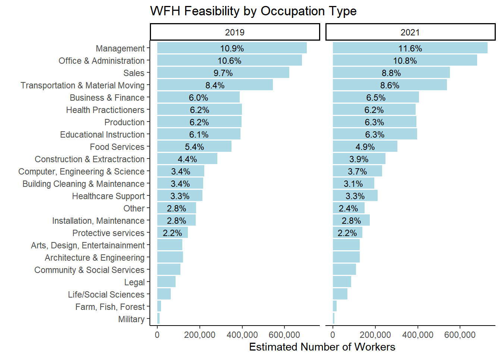
### Percent of Workers working from home within each Broad Occupation type ###
table <- svytable(~YEAR+did_wfh_labels+occ_2dig_labels, design = dstrata)
table <- table %>%
as_tibble() %>%
group_by(YEAR, occ_2dig_labels)%>%
mutate(Prop =round(n/sum(n), digits=3)) %>%
arrange(did_wfh_labels, -n)
table# A tibble: 24 × 5
# Groups: YEAR, occ_2dig_labels [12]
YEAR did_wfh_labels occ_2dig_labels n Prop
<chr> <chr> <chr> <dbl> <dbl>
1 2021 Did WFH Management, Business, Science, Arts 770093 0.299
2 2021 Did WFH Sales & Office Jobs 237371 0.204
3 2019 Did WFH Management, Business, Science, Arts 175796 0.07
4 2019 Did WFH Sales & Office Jobs 73342 0.059
5 2021 Did WFH Service Occupations 66007 0.072
6 2021 Did WFH Production, Transportation 43561 0.051
7 2019 Did WFH Service Occupations 40222 0.038
8 2021 Did WFH Natural Resources, Construction 23400 0.058
9 2019 Did WFH Production, Transportation 15008 0.017
10 2019 Did WFH Natural Resources, Construction 13806 0.031
# ℹ 14 more rowstable %>% filter(occ_2dig_labels != "Military" ) %>%
ggplot(aes(x=fct_rev(fct_inorder(occ_2dig_labels)), y=n, fill = did_wfh_labels, group = YEAR)) +
geom_col(stat = "identity", position = "stack") +facet_wrap(~YEAR)+
geom_text(aes(label = scales::percent(as.numeric(ifelse(Prop>0.05,Prop, "")), accuracy = .1),accuracy = .1L ),position = position_stack(vjust=.5), size=3) +
theme_classic() + theme(legend.position = "bottom", legend.title = element_blank())+
labs(title ="Proportion of Workers in each Occupation Who Did WFH",
subtitle = "Percentages add to 100% within each occupation",
x = "", y = "Estimated # of People",
caption = "ACS 1 year samples for 2019 and 2021 used for weighted population estimates. Military occupations were excluded from graph due to low occurance of observations.") + scale_y_continuous(labels = scales::comma)+
scale_fill_manual(values = c("#a6bddb", "#2b8cbe")) +
coord_flip()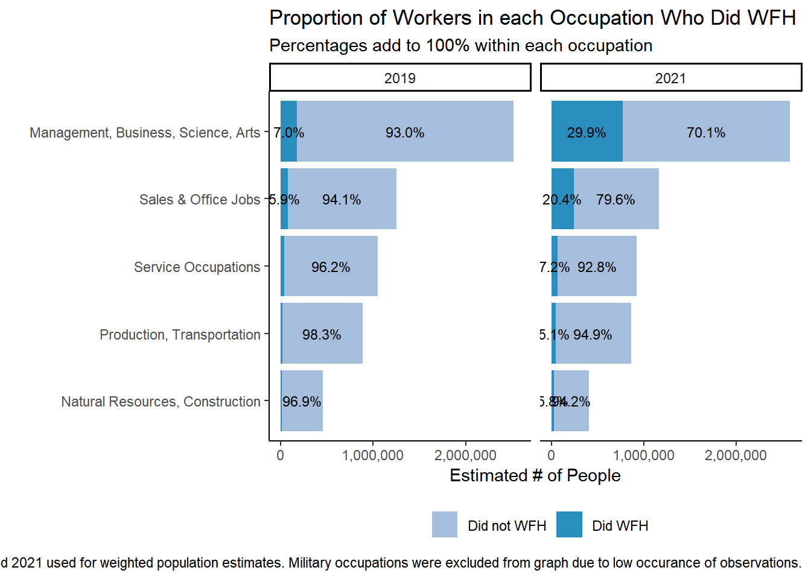
## Proportion of all workers in each occupation cateogory.##
table <- svytable(~YEAR+did_wfh_labels+occ_2dig_labels, design = dstrata)
table <- table %>%
as_tibble() %>%
group_by(YEAR)%>%
mutate(Prop =round(n/sum(n), digits=3)) %>%
arrange(did_wfh_labels, -n)
table# A tibble: 24 × 5
# Groups: YEAR [2]
YEAR did_wfh_labels occ_2dig_labels n Prop
<chr> <chr> <chr> <dbl> <dbl>
1 2021 Did WFH Management, Business, Science, Arts 770093 0.13
2 2021 Did WFH Sales & Office Jobs 237371 0.04
3 2019 Did WFH Management, Business, Science, Arts 175796 0.028
4 2019 Did WFH Sales & Office Jobs 73342 0.012
5 2021 Did WFH Service Occupations 66007 0.011
6 2021 Did WFH Production, Transportation 43561 0.007
7 2019 Did WFH Service Occupations 40222 0.007
8 2021 Did WFH Natural Resources, Construction 23400 0.004
9 2019 Did WFH Production, Transportation 15008 0.002
10 2019 Did WFH Natural Resources, Construction 13806 0.002
# ℹ 14 more rowstable %>%
filter(occ_2dig_labels != "Military") %>%
ggplot(aes(x=fct_rev(fct_inorder(occ_2dig_labels)), y=n, fill = did_wfh_labels, group = YEAR)) +
geom_col(stat = "identity", position = "stack") +
facet_wrap(~YEAR)+
geom_text(aes(label = scales::percent(as.numeric(ifelse(Prop>0.02,Prop, "")), accuracy = .1), accuracy = .1L ),
position = position_stack(vjust=.5), size=3) +
theme_classic() +
theme(legend.position = "none", legend.title = element_blank(),
plot.title.position = "plot",
panel.background = element_rect(fill='transparent'), #transparent panel bg
plot.background = element_rect(fill='transparent', color=NA) #transparent plot bg
)+
labs(title ="Proportion of Illinois Workforce Who Worked From Home",
# subtitle = "All workers in labor force with occsoc codes in a year add to 100%",
x = "", y = "Estimated Number of Workers") +#,
# caption = "ACS 1 year samples for 2019 and 2021 used for weighted population estimates,")
scale_y_continuous(labels = scales::comma) +
scale_x_discrete(labels = function(x) str_wrap(x, width=25))+ # makes labels better on axsis
scale_fill_manual(values = c("#a6bddb", "#2b8cbe")) + coord_flip()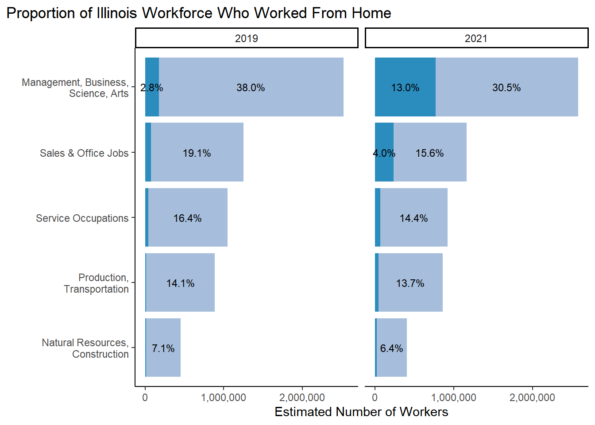
#ggsave("Figure3.eps", limitsize = FALSE,width = 8, height = 4, units = "in")
#ggsave("Figure3.pdf", limitsize = FALSE,width = 8, height = 4, units = "in")
ggsave("Figure3.png", limitsize = FALSE, width = 8, height = 4, units = "in")### Detailed Occuation Types ##
table <- svytable(~YEAR+did_wfh_labels+occ_2dig_labels_d, design = dstrata)
table <- table %>%
as_tibble() %>%
group_by(YEAR)%>%
mutate(Prop =round(n/sum(n), digits=3)) %>%
arrange(did_wfh_labels, -n)
table# A tibble: 92 × 5
# Groups: YEAR [2]
YEAR did_wfh_labels occ_2dig_labels_d n Prop
<chr> <chr> <chr> <dbl> <dbl>
1 2021 Did WFH Management 215100 0.036
2 2021 Did WFH Business & Finance 181923 0.031
3 2021 Did WFH Office & Administration 131368 0.022
4 2021 Did WFH Computer, Engineering & Science 125364 0.021
5 2021 Did WFH Sales 106003 0.018
6 2021 Did WFH Educational Instruction 59562 0.01
7 2019 Did WFH Management 52983 0.009
8 2021 Did WFH Arts, Design, Entertainainment 46509 0.008
9 2019 Did WFH Sales 43385 0.007
10 2019 Did WFH Business & Finance 38141 0.006
# ℹ 82 more rowstable %>%ggplot(aes(x=fct_rev(fct_inorder(occ_2dig_labels_d)), y=n, fill = did_wfh_labels, group = YEAR)) +
geom_col(stat = "identity", position = "stack") +
facet_wrap(~YEAR)+
geom_text(aes(label = scales::percent(as.numeric(ifelse(Prop>0.01,Prop, "")), accuracy = .1),accuracy = .1L ),position = position_stack(vjust=.5), size=3) +
theme_classic() + theme(legend.position = "bottom", legend.title = element_blank())+
labs(title ="Percent working from home by 2-digit Occupation type",
x = "", y = "Estimated Number of Workers") +
scale_y_continuous(labels = scales::comma)+
scale_fill_manual(values = c("#a6bddb", "#2b8cbe")) +
coord_flip()
ACS 1 year samples for 2019 and 2021 used for weighted population estimates. Graph interpretation: 3.6% of all worker in the labor force in 2021 were in Management occupations and worked from home. 8.3% of all workers were in management and did not work from home. Workers in Management occupations make up 11.9% of the entire workforce.
# Both years, detailed observation types
table <- svytable(~YEAR+CanWorkFromHome+occ_2dig_labels_d, design = dstrata)
table <- table %>%
as_tibble() %>%
group_by(YEAR)%>%
arrange(CanWorkFromHome,-n) %>%
mutate(Prop =round(n/sum(n), digits=3))
table# A tibble: 138 × 5
# Groups: YEAR [2]
YEAR CanWorkFromHome occ_2dig_labels_d n Prop
<chr> <chr> <chr> <dbl> <dbl>
1 2021 Can WFH Management 413773 0.066
2 2019 Can WFH Management 388354 0.06
3 2019 Can WFH Educational Instruction 356653 0.055
4 2021 Can WFH Educational Instruction 355765 0.057
5 2021 Can WFH Office & Administration 336680 0.054
6 2019 Can WFH Office & Administration 332739 0.052
7 2021 Can WFH Business & Finance 313680 0.05
8 2019 Can WFH Business & Finance 304074 0.047
9 2021 Can WFH Computer, Engineering & Science 231152 0.037
10 2019 Can WFH Computer, Engineering & Science 220217 0.034
# ℹ 128 more rowstable %>%
ggplot(aes(x=fct_rev(fct_inorder(occ_2dig_labels_d)), y=n, fill = CanWorkFromHome, group = YEAR)) +
geom_col(stat = "identity", position = "stack") +
facet_wrap(~YEAR)+
geom_text(aes(label = scales::percent(as.numeric(ifelse(Prop>0.01,Prop, "")), accuracy = .1), accuracy= 0.1L ),position = position_stack(vjust=.5), size=3) +
theme_classic() + theme(legend.position = "bottom", legend.title = element_blank())+
labs(title ="Percent of Illinois Workers that Could WFH by Occupation Type",
x = "", y = "Estimated Number of Workers") +
scale_y_continuous(labels = scales::comma)+
scale_fill_manual(values = c( "#117733","#44AA99","#D8D5C5")) +
coord_flip()
OCCSOC codes and Teleworkable scores from occupation characteristics. 11.6% of all workers in Illinois had management occupations (6.6 Can WFH + 1.8 No WFH + 3.2 Some WFH in 2021). 6.6% of all workers in Illinois had management occupations and could feasibly WFH. ACS 1 year samples for 2019 and 2021 used for weighted population estimates.
table <- svytable(~YEAR+CanWorkFromHome+occ_2dig_labels_d, design = dstrata)
table <- table %>%
as_tibble() %>%
filter(YEAR==2021)%>%
arrange(CanWorkFromHome, -n) %>%
mutate(Prop =round(n/sum(n), digits=3))
table %>%
ggplot(aes(x=fct_rev(fct_inorder(occ_2dig_labels_d)), y=n, fill = CanWorkFromHome, group=YEAR)) +
geom_col(position="stack", stat = "identity")+
geom_text(aes(label = scales::percent(as.numeric(ifelse(Prop>0.01,Prop, "")), accuracy = .1), accuracy= 0.1L ), position = position_stack(vjust=.5), size=3) +
theme_classic() + theme(legend.position = "bottom", legend.title = element_blank())+
labs(title ="Percent of Workers that Could Feasibily Work From Home in 2021",
x = "", y = "# of People",
caption = "Occupation codes (OCCSOC)from the 2021 1-year ACS merged with work from home feasibility scores.") + scale_y_continuous(labels = scales::comma)+
scale_fill_manual(values = c( "#2b8cbe","#a6bddb","gray80")) +
coord_flip()
## Proportion of all workers in each occupation cateogory.##
table <- svytable(~YEAR+CanWorkFromHome+occ_2dig_labels, design = dstrata)
table <- table %>%
as_tibble() %>%
group_by(YEAR)%>%
mutate(Prop =round(n/sum(n), digits=3)) %>%
arrange(CanWorkFromHome, -n)
table# A tibble: 36 × 5
# Groups: YEAR [2]
YEAR CanWorkFromHome occ_2dig_labels n Prop
<chr> <chr> <chr> <dbl> <dbl>
1 2021 Can WFH Management, Business, Science, Arts 1567413 0.25
2 2019 Can WFH Management, Business, Science, Arts 1514931 0.235
3 2019 Can WFH Sales & Office Jobs 454461 0.071
4 2021 Can WFH Sales & Office Jobs 443294 0.071
5 2019 Can WFH Service Occupations 75187 0.012
6 2021 Can WFH Service Occupations 67050 0.011
7 2021 Can WFH Production, Transportation 8451 0.001
8 2019 Can WFH Production, Transportation 6975 0.001
9 2021 Can WFH Natural Resources, Construction 923 0
10 2019 Can WFH Natural Resources, Construction 751 0
# ℹ 26 more rowsFigure1 <- table %>% filter(occ_2dig_labels != "Military") %>%
ggplot(aes(x=fct_rev(fct_inorder(occ_2dig_labels)), y=n, fill = CanWorkFromHome, group = YEAR)) +
geom_col(stat = "identity", position = "stack") +
facet_wrap(~YEAR)+
geom_text(aes(label = scales::percent(as.numeric(ifelse(Prop>0.02,Prop, "")), accuracy = .1),accuracy = .1L ),
position = position_stack(vjust=.5), size=2.5) +
theme_classic() +
theme(plot.title = element_text(hjust=0), legend.position = "bottom",
# legend.title = element_text(text = "WFH Feasibility")
# legend.title = element_blank()
)+
labs(title ="WFH Feasibility for Workers in Illinois by Broadest Occupation Categories",
# subtitle = "All workers in labor force with occsoc codes in a year add to 100%",
x = "", y = "Number of Workers in Illinois",
# caption = "ACS 1 year samples for 2019 and 2021 used for weighted population estimates"
) +
scale_x_discrete(labels = function(x) str_wrap(x, width=25))+ # makes labels better on axis
scale_y_continuous(labels = scales::comma) +
scale_fill_manual(name = "WFH Feasibility", values = c( "#2b8cbe","#a6bddb", "gray89")) +
coord_flip() # = element_text(hjust = 0, vjust=2.12))
Figure1
#ggsave("Figure1.eps", limitsize = FALSE,width = 8, height = 4, units = "in")#
# ggsave("Figure1.pdf", limitsize = FALSE,width = 8, height = 4, units = "in")
ggsave("Figure1.png", limitsize = FALSE, width = 8, height = 4, units = "in")
#ggsave("Figure1.png", limitsize=FALSE, dpi = "retina")3.2.2 Could WFH vs. did WFH
Code
## Totals add up to total number of workers in a year
table <- svytable(~CanWorkFromHome+YEAR+did_wfh_labels, design = dstrata)
# proportion of each respondant's sex and if they worked from home for each year in sample
table <- table %>%
as_tibble() %>%
group_by(YEAR)%>% # will divide by all workers per year
mutate(Prop =round(n/sum(n), digits=3)) %>%
arrange(did_wfh_labels, -n)
table# A tibble: 12 × 5
# Groups: YEAR [2]
CanWorkFromHome YEAR did_wfh_labels n Prop
<chr> <chr> <chr> <dbl> <dbl>
1 Can WFH 2021 Did WFH 645226 0.109
2 Some WFH 2021 Did WFH 252720 0.043
3 No WFH 2021 Did WFH 242889 0.041
4 Can WFH 2019 Did WFH 150516 0.024
5 No WFH 2019 Did WFH 104070 0.017
6 Some WFH 2019 Did WFH 63588 0.01
7 No WFH 2019 Did not WFH 3297200 0.534
8 No WFH 2021 Did not WFH 2881228 0.486
9 Can WFH 2019 Did not WFH 1837107 0.298
10 Can WFH 2021 Did not WFH 1358516 0.229
11 Some WFH 2019 Did not WFH 716332 0.116
12 Some WFH 2021 Did not WFH 549194 0.093Code
## percentages add up to 100 when adding all workers together for a year
table %>% ggplot(aes(CanWorkFromHome, y=n, fill = did_wfh_labels, group = YEAR)) +
geom_col(stat = "identity", position = "stack") +
facet_wrap(~YEAR)+
geom_text(aes(label = scales::percent(Prop)), position = position_stack(vjust=.5), size=3) +
#scale_fill_manual(values = c("#a6bddb", "#2b8cbe"))+
theme_classic() + theme(legend.position = "none", legend.title = element_blank())+
labs(title ="Did those who could work from home actually work from home?",subtitle = "2019 vs 2021",
x = "", y = "Estimated Number of Workers") +
scale_y_continuous(labels = scales::comma) +
scale_fill_manual(values = c("#a6bddb", "#2b8cbe"))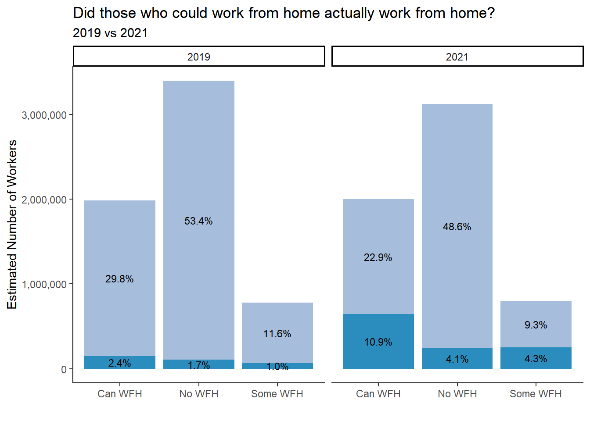
Code
#ggsave("Figure1.eps", limitsize = FALSE,width = 8, height = 4, units = "in")
#ggsave("Figure1.pdf", limitsize = FALSE,width = 8, height = 4, units = "in")
ggsave("Figure8.png", limitsize = FALSE, width = 7, height = 5, units = "in")table <- svytable(~CanWorkFromHome+YEAR+did_wfh_labels, design = dstrata)
# proportion of each respondant's sex and if they worked from home for each year in sample
table <- table %>%
as_tibble() %>%
group_by(YEAR, CanWorkFromHome)%>% # divides by all workers per year within each categor
mutate(Prop =round(n/sum(n), digits=3)) %>%
arrange(did_wfh_labels,-n)
table# A tibble: 12 × 5
# Groups: YEAR, CanWorkFromHome [6]
CanWorkFromHome YEAR did_wfh_labels n Prop
<chr> <chr> <chr> <dbl> <dbl>
1 Can WFH 2021 Did WFH 645226 0.322
2 Some WFH 2021 Did WFH 252720 0.315
3 No WFH 2021 Did WFH 242889 0.078
4 Can WFH 2019 Did WFH 150516 0.076
5 No WFH 2019 Did WFH 104070 0.031
6 Some WFH 2019 Did WFH 63588 0.082
7 No WFH 2019 Did not WFH 3297200 0.969
8 No WFH 2021 Did not WFH 2881228 0.922
9 Can WFH 2019 Did not WFH 1837107 0.924
10 Can WFH 2021 Did not WFH 1358516 0.678
11 Some WFH 2019 Did not WFH 716332 0.918
12 Some WFH 2021 Did not WFH 549194 0.685xtabs(~did_wfh_labels+CanWorkFromHome+YEAR, data = dstrata), , YEAR = 2019
CanWorkFromHome
did_wfh_labels Can WFH No WFH Some WFH
Did not WFH 18433 30664 7094
Did WFH 1484 971 596
, , YEAR = 2021
CanWorkFromHome
did_wfh_labels Can WFH No WFH Some WFH
Did not WFH 13594 27599 5380
Did WFH 6217 2225 2370## percentages add up to 100 when adding all workers together for a year
table %>% ggplot(aes(fct_inorder(CanWorkFromHome), y=n, fill = did_wfh_labels, group = YEAR)) +
geom_col(stat = "identity", position = "stack") +
facet_wrap(~YEAR)+
geom_text(aes(label = scales::percent(Prop, accuracy = 0.1L)), position = position_stack(vjust=.5), size=3) +
theme_classic() + theme(legend.position = "bottom", legend.title = element_blank())+
labs(title ="Did those who COULD work from home actually work from home:", subtitle = "2019 vs 2021",
x = "", y = "# of People",
caption = "Comparison graph that might feel more correct.
Percentages add up to 100 when adding all workers within each CanWorkFromHome category for each a year.
Did work from home based on TRANWORK==80 variable from ACS surveys. Can Work from home based on teleworkable classification in Dingel & Niemen (2020).
ACS 1 year samples for 2019 and 2021 used for weighted population estimates.") + scale_y_continuous(labels = scales::comma)+
scale_fill_manual(values = c("#a6bddb", "#2b8cbe")) 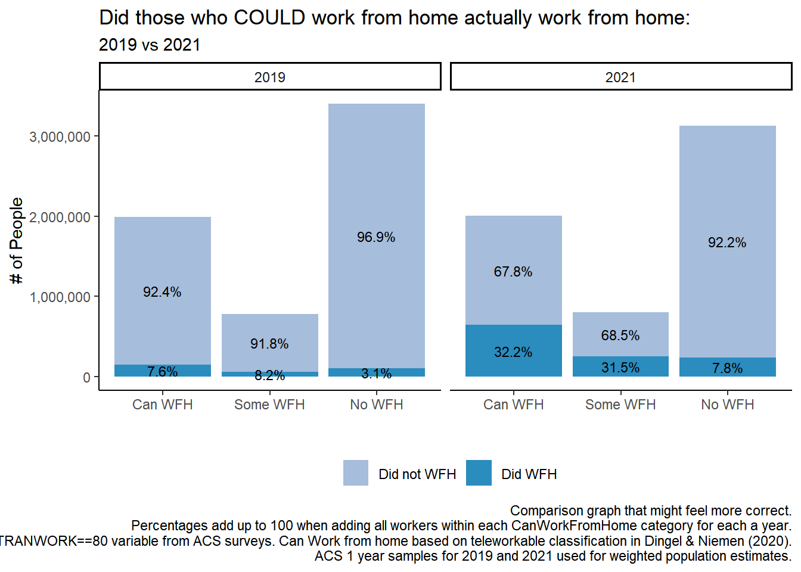
table <- table %>%
as_tibble() %>%
group_by(YEAR, CanWorkFromHome)%>% # divides by all workers per year within each categor
filter(CanWorkFromHome != "Some WFH") %>%
mutate(Prop =round(n/sum(n), digits=3)) %>%
arrange(did_wfh_labels,-n)
table# A tibble: 8 × 5
# Groups: YEAR, CanWorkFromHome [4]
CanWorkFromHome YEAR did_wfh_labels n Prop
<chr> <chr> <chr> <dbl> <dbl>
1 Can WFH 2021 Did WFH 645226 0.322
2 No WFH 2021 Did WFH 242889 0.078
3 Can WFH 2019 Did WFH 150516 0.076
4 No WFH 2019 Did WFH 104070 0.031
5 No WFH 2019 Did not WFH 3297200 0.969
6 No WFH 2021 Did not WFH 2881228 0.922
7 Can WFH 2019 Did not WFH 1837107 0.924
8 Can WFH 2021 Did not WFH 1358516 0.678xtabs(~did_wfh_labels+CanWorkFromHome+YEAR, data = dstrata), , YEAR = 2019
CanWorkFromHome
did_wfh_labels Can WFH No WFH Some WFH
Did not WFH 18433 30664 7094
Did WFH 1484 971 596
, , YEAR = 2021
CanWorkFromHome
did_wfh_labels Can WFH No WFH Some WFH
Did not WFH 13594 27599 5380
Did WFH 6217 2225 2370## percentages add up to 100 when adding all workers together for a year
table %>% ggplot(aes(fct_inorder(CanWorkFromHome), y=n, fill = did_wfh_labels, group = YEAR)) +
geom_col(stat = "identity", position = "stack") +
facet_wrap(~YEAR)+
geom_text(aes(label = scales::percent(Prop, accuracy = 0.1L)), position = position_stack(vjust=.5), size=3) +
theme_classic() + theme(legend.position = "bottom", legend.title = element_blank())+
labs(title ="Did those who COULD work from home actually work from home:", subtitle = "2019 vs 2021",
x = "", y = "# of People",
caption = "Comparison graph that might feel more correct.
Percentages add up to 100 when adding all workers within each CanWorkFromHome category for each a year.
Did work from home based on TRANWORK==80 variable from ACS surveys. Can Work from home based on teleworkable classification in Dingel & Niemen (2020).
ACS 1 year samples for 2019 and 2021 used for weighted population estimates.") + scale_y_continuous(labels = scales::comma)+
scale_fill_manual(values = c("#a6bddb", "#2b8cbe")) 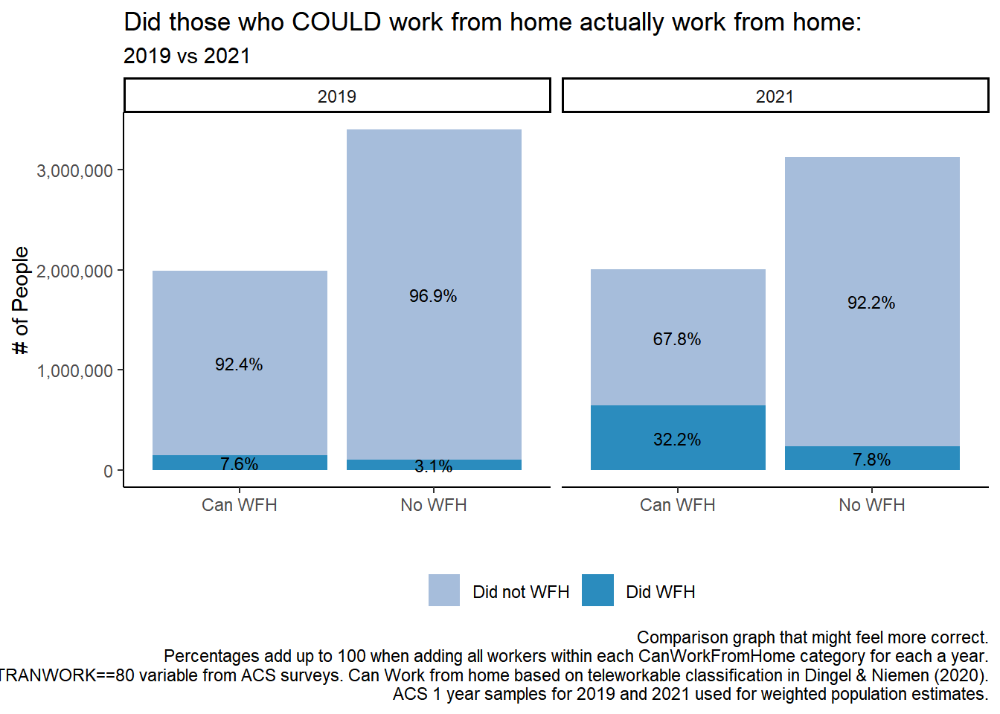
#
# table <- svytable(~CanWorkFromHome+YEAR+did_wfh_labels, design = dstrata)
# # proportion of each respondant's sex and if they worked from home for each year in sample
# table <- table %>%
# as_tibble() %>%
# group_by(YEAR, did_wfh_labels)%>% # divides by all workers per year within each categor
# mutate(Prop =round(n/sum(n), digits=3))
## percentages add up to 100 when adding all workers together for a year
## Don't like this version of the graph ###
# table %>% ggplot(aes(did_wfh_labels, y=n, fill = CanWorkFromHome, group = YEAR)) +
# geom_col(stat = "identity", position = "stack") +
# facet_wrap(~YEAR)+
# geom_text(aes(label = scales::percent(Prop)), position = position_stack(vjust=.5), size=3) +
# theme_classic() + theme(legend.position = "bottom", legend.title = element_blank())+
# labs(title ="Did those who COULD work from home actually work from home:", subtitle = "2019 vs 2021",
# x = "", y = "# of People",
# caption = "Comparison graph that might feel more correct.
# Percentages add up to 100 when adding all workers within each did_wfh category for each a year.
# Did work from home based on TRANWORK==80 variable from ACS surveys. Can Work from home based on teleworkable classification in Dingel & Niemen (2020).
# ACS 1 year samples for 2019 and 2021 used for weighted population estimates.") + scale_y_continuous(labels = scales::comma)Ideally switch order of categories so that Did WFH is on the bottom of stack. Allows easier visual comparison.
3.2.3 Creating Income Deciles
# svyquantile shows the breaks for the quantiles. hypothetically uses weights of observations for calculation of deciles.
# equal number of people should be in each decile after weights are applied
inc_quantiles <- survey::svyquantile(~INCEARN, design=dstrata2019,
quantiles = c(0,0.1,0.2,0.3,0.4,0.5,0.6,0.7,0.8,0.9,1) , na.rm=TRUE, ci = FALSE )
# $INCEARN for 2019
#[1,] 4 8000 16000 24000 30900 40000 50000 62000 80000 113000 933000
# values not adjusted to 2021 values.
inc_quantiles$INCEARN
0 0.1 0.2 0.3 0.4 0.5 0.6 0.7 0.8 0.9 1
[1,] 4 8300 16500 25000 31200 40000 50000 62000 80000 114000 933000
attr(,"hasci")
[1] FALSE
attr(,"class")
[1] "newsvyquantile"inc_quantiles <-survey::svyquantile(~INCEARN, design=dstrata2021,
quantiles = c(0,0.1,0.2,0.3,0.4,0.5,0.6,0.7,0.8,0.9,1) ,
na.rm=TRUE, ci = FALSE )
inc_quantiles$INCEARN
0 0.1 0.2 0.3 0.4 0.5 0.6 0.7 0.8 0.9 1
[1,] 4 8000 17000 25600 35000 42500 53000 68000 85000 120000 949000
attr(,"hasci")
[1] FALSE
attr(,"class")
[1] "newsvyquantile"# $INCEARN
# [1,] 4 7200 16000 25000 34000 42000 52000 67000 85000 120000 949000
breaks2019 <- c(7200, 16000, 25000, 34000, 42000, 52000, 67000, 85000, 120000)
breaks2019adjusted <- c(8478, 16956, 25434, 32853, 42390, 52988, 65705, 84781, 120813)
# from 2021 5 year sample and filtered for just 2019.
# already adjusted for inflation.
# included for comparison and to decide to use 5 year ACS or 2019 and 2021 1 year ACS
breaks2021 <- c(8000, 18000, 26000, 35000, 43000, 54000, 68000, 85000, 120000)
# Code done above when creating variables in beginning chunks.
# joined <- joined %>%
# mutate(incdecile_w = case_when(
# INCEARN < 8000 ~ 1,
# INCEARN >= 8000 & INCEARN < 18000 ~ 2,
# INCEARN >= 18000 & INCEARN < 26000 ~ 3,
# INCEARN >= 26000 & INCEARN < 35000 ~ 4,
# INCEARN >= 35000 & INCEARN < 43000 ~ 5,
# INCEARN >= 43000 & INCEARN < 54000 ~ 6,
# INCEARN >= 54000 & INCEARN < 68000 ~ 7,
# INCEARN >= 68000 & INCEARN < 85000 ~ 8,
# INCEARN >= 85000 & INCEARN < 120000 ~ 9,
# INCEARN >= 120000 ~ 10)
# )
# number of observations in each decile after weights used for creating the income deciles
#table(joined$incdecile_w)
# no major differnce between years in who COULD work from home based on teleworkable codes. Makes sense.
# ggplot(joined, aes(teleworkable, weight = PERWT)) +
# geom_histogram()+facet_wrap(~YEAR)
table <- svytable(~YEAR+incdecile_w+did_wfh_labels, design = dstrata) # proportion of each respondants sex in sample
table <- table %>%
as_tibble() %>%
group_by(YEAR,incdecile_w)%>%
mutate(Prop=round(n/sum(n), digits=3)) %>%
filter(did_wfh_labels == "Did WFH")
table # has proportions calculated out of TOTAl for both years# A tibble: 20 × 5
# Groups: YEAR, incdecile_w [20]
YEAR incdecile_w did_wfh_labels n Prop
<chr> <chr> <chr> <dbl> <dbl>
1 2019 1 Did WFH 29972 0.059
2 2021 1 Did WFH 64091 0.125
3 2019 2 Did WFH 36347 0.051
4 2021 2 Did WFH 68274 0.114
5 2019 3 Did WFH 26568 0.038
6 2021 3 Did WFH 63128 0.113
7 2019 4 Did WFH 24575 0.037
8 2021 4 Did WFH 62118 0.107
9 2019 5 Did WFH 21527 0.034
10 2021 5 Did WFH 80702 0.13
11 2019 6 Did WFH 23462 0.038
12 2021 6 Did WFH 97007 0.158
13 2019 7 Did WFH 27153 0.044
14 2021 7 Did WFH 117947 0.2
15 2019 8 Did WFH 30508 0.055
16 2021 8 Did WFH 140149 0.244
17 2019 9 Did WFH 39778 0.068
18 2021 9 Did WFH 192744 0.297
19 2019 10 Did WFH 58284 0.098
20 2021 10 Did WFH 254675 0.402table %>%
ggplot(aes(factor(incdecile_w, levels = c(1,2,3,4,5,6,7,8,9,10), labels = c("Bottom 10%", "20%", "30%", "40%", "50%", "60%", "70%", "80%", "90%", "Top 10%")),
y=Prop, fill = YEAR, group = factor(YEAR, levels = "2021","2019"))) +
geom_col(stat="identity", position = "dodge")+
#geom_col(stat = "identity", position = "stack") + # scale_x_discrete(limits = c("Bottom 10%", "20%", "30%", "40%", "50%", "60%", "70%", "80%", "90%", "Top 10%"))+
# facet_wrap(~YEAR)+
coord_flip()+
geom_text(aes(label = scales::percent(Prop, accuracy = 0.1L)), position = position_dodge(width = 0.8), hjust = 1.1,
size = 4) +
labs(title ="Working From Home by Earned Income Deciles",
subtitle = "2019 vs 2021",
# caption = "ACS 1 year samples for 2019 and 2021. Working from home based on TRANWORK question on commuting.
# All workers in the labor force, all ages included.
# Income based on INCEARN for total earned income of survey respondents.",
x= "Income Deciles",
y = "Percent of earners working from home") +
theme(legend.position = "none", legend.title = element_blank())+
theme_classic()+
scale_fill_manual(values = c("#a6bddb", "#2b8cbe")) +
scale_y_continuous(labels = scales::percent)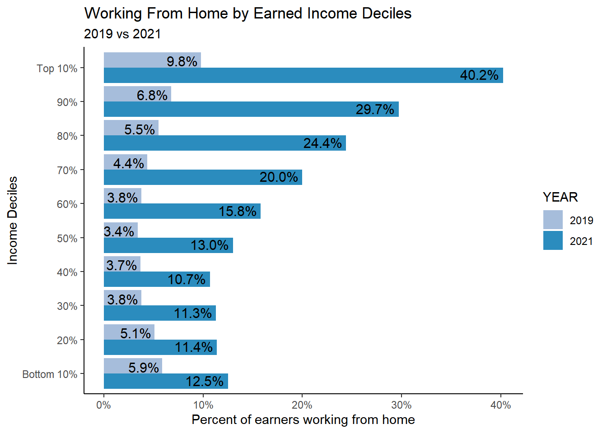
#ggsave("Figure6.eps", limitsize = FALSE,width = 8, height = 4, units = "in")
#ggsave("Figure6.pdf", limitsize = FALSE,width = 8, height = 4, units = "in")
ggsave("Figure6.png", limitsize = FALSE, width = 8, height = 4, units = "in")
decile_labels <- c("Bottom 10%", "20%", "30%", "40%", "50%", "60%", "70%", "80%", "90%", "Top 10%")who did work from home in lower income brackets???
399011 in Service Occupations had 148 observations, 311122 had 86.
Vast Majority of those that did work form home in the bottom 10% of earners had management, business, sales, or office jobs. (specifically 399011, 253041,436014)
outliers: occupation 537062, 533030, 537065 in production and transportation, 399011 in service occupations which usually need to be in person.
399011 (2nd and 3rd decile), 311122 (2nd and 3rd decile)
joined %>% filter(did_wfh==1 & incdecile_w < 4) %>% group_by(incdecile_w, occ_2digits, occ_2dig_labels, OCCSOC) %>% summarize(obs = n()) %>% arrange(incdecile_w,-obs)# A tibble: 679 × 5
# Groups: incdecile_w, occ_2digits, occ_2dig_labels [67]
incdecile_w occ_2digits occ_2dig_labels OCCSOC obs
<dbl> <chr> <chr> <chr> <int>
1 1 39 Service Occupations 399011 56
2 1 31 Service Occupations 311122 23
3 1 25 Management, Business, Science, Arts 253041 22
4 1 43 Sales & Office Jobs 436014 22
5 1 25 Management, Business, Science, Arts 2530XX 21
6 1 11 Management, Business, Science, Arts 1191XX 20
7 1 39 Service Occupations 395012 18
8 1 13 Management, Business, Science, Arts 132011 17
9 1 27 Management, Business, Science, Arts 273043 17
10 1 41 Sales & Office Jobs 412031 17
# ℹ 669 more rows3.2.3.1 Household Income
Mostly a robustness check. Not used in the paper or regressions.
hhbreaks2019 = (32100, 50000, 65600, 80500, 97300, 115700, 137500, 168000, 225010) and max is 1671000
hhbreaks2021 = (34000, 51900, 68000, 83600, 1e+05 120,000 142,400 175,000 235,000) and max is 1,797,000. ### Gender and Working from home
19.2% of those in the labor force worked from home in 2021.
- 10.7% were women, 9.8% were men.
- In 2021, 17.6% of male workers did WFH and 21% of female workers did WFH.
52.5% of those in the labor force that have occupation codes were Men, 47.5% were Women.
#round(prop.table(svytable(~did_wfh_labels, design=dstrata2019))*100,digits=2)
#94.7 did not wfh, 5.29 did work from home in 2019
round(prop.table(svytable(~did_wfh_labels, design=dstrata2021))*100, digits=2) did_wfh_labels
Did not WFH Did WFH
80.76 19.24 # # unweighted attempt at summary table using "data" dataframe
# table <- data %>%
# # filter(did_wfh==1) %>%
# mutate(total = n()) %>%
# group_by(YEAR, did_wfh_labels, SEX) %>%
# dplyr::summarize(n_unweighted=n()) %>%
# mutate(Prop = n_unweighted/sum(n_unweighted))
# # unweighted sex proportions each year
# # for comparison
#
# # of those that did work from home,51% were female in 2019 and 51.9% were female in 2021.
# table
table <- svytable(~SEX+YEAR+did_wfh_labels, design = dstrata)
# proportion of each sex that did or did not work from home
table <- table %>%
as_tibble() %>%
group_by(YEAR, SEX)%>%
mutate(Prop =round(n/sum(n), digits=4))
# 5.4% of women worked at home in 2019 and 21% of women worked at home in 2021.
table# A tibble: 8 × 5
# Groups: YEAR, SEX [4]
SEX YEAR did_wfh_labels n Prop
<chr> <chr> <chr> <dbl> <dbl>
1 1 2019 Did not WFH 3039231 0.950
2 2 2019 Did not WFH 2811408 0.946
3 1 2021 Did not WFH 2562380 0.823
4 2 2021 Did not WFH 2226558 0.790
5 1 2019 Did WFH 159128 0.0498
6 2 2019 Did WFH 159046 0.0535
7 1 2021 Did WFH 549602 0.177
8 2 2021 Did WFH 591233 0.210 # # attempt 1, not what I wanted
# table %>% ggplot(aes(did_wfh_labels, y=Prop, group = YEAR, fill = YEAR)) +
# geom_col(stat = "identity", position = "dodge") +
# geom_text(aes(label = scales::percent(Prop)), position = position_dodge(width = .9), size=3,vjust=1.1) +
# theme_classic() + theme(legend.position = "bottom", legend.title = element_blank())+
# labs(title ="First Attempt at WFH graph for each Year",
# x = "", y = "",
# caption = "ACS 1 year samples for 2019 and 2021 used for weighted population estimates,") + scale_y_continuous(labels = scales::percent)
# # attempt 2
# table %>% ggplot(aes(factor(SEX, labels = c("Male", "Female")), y=Prop, fill = did_wfh_labels, group = YEAR)) +
# geom_col(stat = "identity", position = "stack") +
# facet_wrap(~YEAR)+
# geom_text(aes(label = scales::percent(Prop)), position = position_fill(vjust=.5), size=3) +
# theme_classic() + theme(legend.position = "bottom", legend.title = element_blank())+
# scale_fill_manual(values = c("#a6bddb", "#2b8cbe"))+
# labs(title ="Percent working from home by Sex: 2019 vs 2021",
# x = "", y = "",
# caption = "ACS 1 year samples for 2019 and 2021 used for weighted population estimates,") + scale_y_continuous(labels = scales::percent)
### Percentages add up to 100% for each gender for each year.
table %>% ggplot(aes(factor(SEX, labels = c("Male", "Female")), y=n, fill = did_wfh_labels, group = YEAR)) +
geom_col(stat = "identity", position = "stack") +
facet_wrap(~YEAR)+
geom_text(aes(label = scales::percent(Prop)), position = position_stack(vjust=.5), size=3) +
scale_fill_manual(values = c("#a6bddb", "#2b8cbe"))+
theme_classic() + theme(legend.position = "bottom", legend.title = element_blank())+
labs(title ="Percent working from home by Sex: 2019 vs 2021",
x = "", y = "# of People",
caption = "ACS 1 year samples for 2019 and 2021 used for weighted population estimates,") + scale_y_continuous(labels = scales::comma)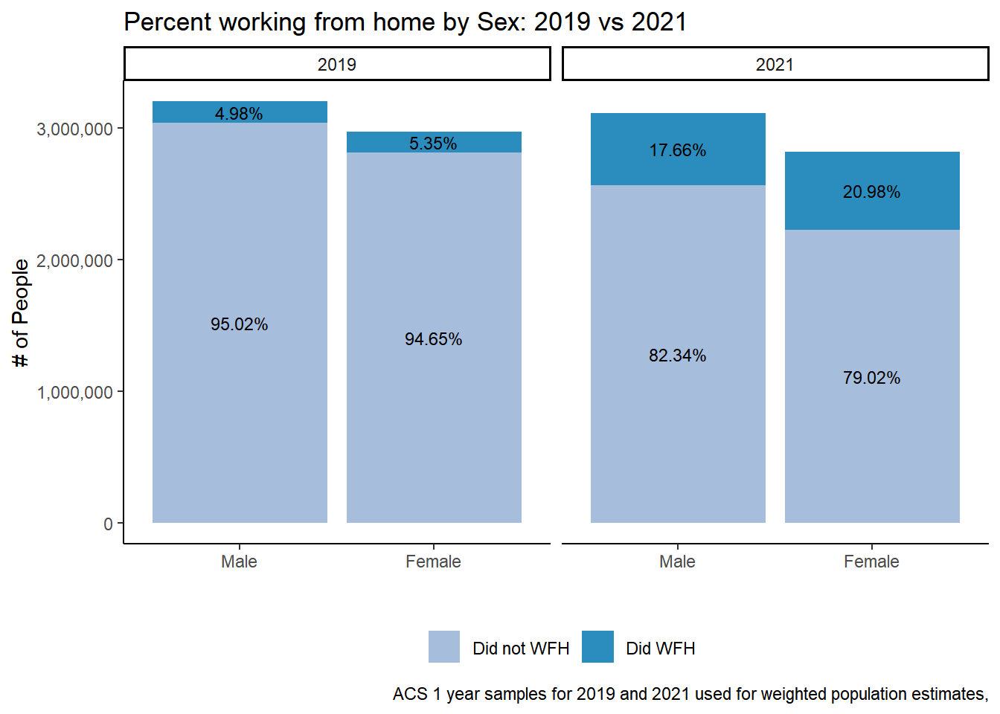
#compare combined strata survey design to single year survey objects:
# MATCHES
# table <- svytable(~SEX+did_wfh, design = dstrata2019) # proportion of each respondants sex in sample
# table <- table %>%
# as_tibble() %>%
# group_by(SEX) %>%
# mutate(Prop = round(n/sum(n), digits=4))
# table
#
# table <- svytable(~SEX+did_wfh, design = dstrata2021,
# round= TRUE)
# table <- table %>%
# as_tibble() %>% group_by(SEX) %>%
# mutate(Prop = round(n/sum(n), digits=4))
# table
## Totals add up to total number of workers in a year
table <- svytable(~SEX+YEAR+did_wfh_labels, design = dstrata)
# proportion of each respondant's sex and if they worked from home for each year in sample
table <- table %>%
as_tibble() %>%
group_by(YEAR)%>% # grouped by Year and Sex!!
mutate(Prop =round(n/sum(n), digits=4))
table# A tibble: 8 × 5
# Groups: YEAR [2]
SEX YEAR did_wfh_labels n Prop
<chr> <chr> <chr> <dbl> <dbl>
1 1 2019 Did not WFH 3039231 0.493
2 2 2019 Did not WFH 2811408 0.456
3 1 2021 Did not WFH 2562380 0.432
4 2 2021 Did not WFH 2226558 0.376
5 1 2019 Did WFH 159128 0.0258
6 2 2019 Did WFH 159046 0.0258
7 1 2021 Did WFH 549602 0.0927
8 2 2021 Did WFH 591233 0.0997## percentages add up to 100 when adding all workers together for a year
table %>% ggplot(aes(factor(SEX, labels = c("Male", "Female")), y=n, fill = did_wfh_labels, group = YEAR)) +
geom_col(stat = "identity", position = "stack") +
facet_wrap(~YEAR)+
geom_text(aes(label = scales::percent(Prop)), position = position_stack(vjust=.5), size=3) +
scale_fill_manual(values = c("#a6bddb", "#2b8cbe"))+
theme_classic() + theme(legend.position = "bottom", legend.title = element_blank())+
labs(title ="Percent working from home by Sex: 2019 vs 2021",
x = "", y = "# of People",
caption = "ACS 1 year samples for 2019 and 2021 used for weighted population estimates.
Percentages add up to 100 when adding all workers together each year.
Working from home based on TRANWORK==80 variable from ACS surveys.") + scale_y_continuous(labels = scales::comma)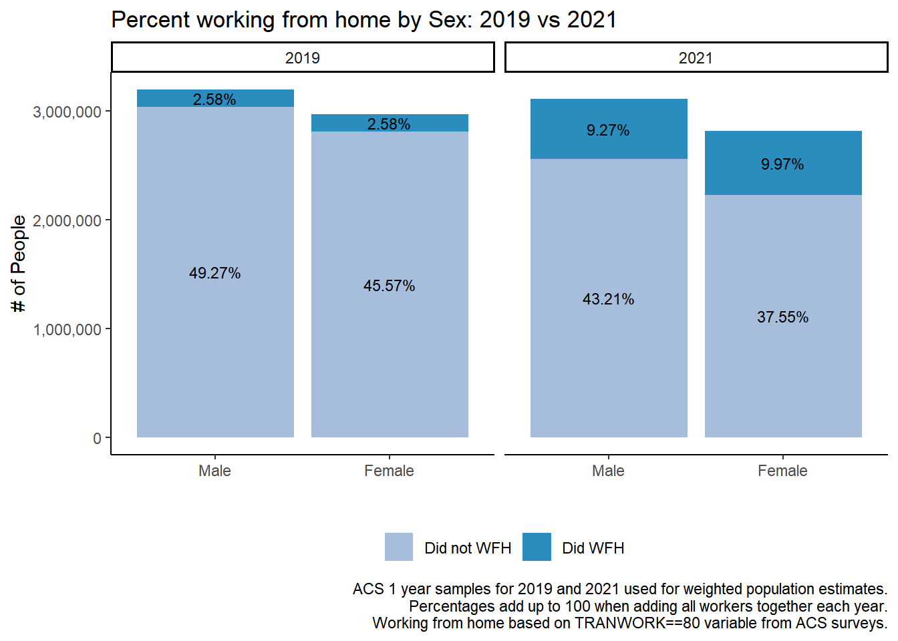
svyttest(formula = SEX~did_wfh_labels, design = dstrata2021)
Design-based t-test
data: SEX ~ did_wfh_labels
t = 8.3, df = 35419, p-value < 2.2e-16
alternative hypothesis: true difference in mean is not equal to 0
95 percent confidence interval:
0.04071947 0.06589675
sample estimates:
difference in mean
0.05330811 svychisq(~did_wfh_labels+SEX, dstrata2021, statistic = "Chisq")
Pearson's X^2: Rao & Scott adjustment
data: NextMethod()
X-squared = 106.93, df = 1, p-value < 2.2e-16round(prop.table(svytable(~SEX+did_wfh_labels, design=dstrata2021))*100,digits=2) did_wfh_labels
SEX Did not WFH Did WFH
1 43.21 9.27
2 37.55 9.97round(prop.table(svytable(~has_occsoc+SEX, design=dstrata2019))*100,digits=2) SEX
has_occsoc 1 2
1 51.89 48.11# slight drop in women in the workforce (technically women with occupations).
round(prop.table(svytable(~has_occsoc+SEX, design=dstrata2021))*100,digits=2) SEX
has_occsoc 1 2
1 52.45 47.55CrossTable(joined$SEX, joined$YEAR)
Cell Contents
|-------------------------|
| N |
| Chi-square contribution |
| N / Row Total |
| N / Col Total |
| N / Table Total |
|-------------------------|
Total Observations in Table: 122063
| joined$YEAR
joined$SEX | 2019 | 2021 | Row Total |
-------------|-----------|-----------|-----------|
1 | 31967 | 31518 | 63485 |
| 0.364 | 0.372 | |
| 0.504 | 0.496 | 0.520 |
| 0.518 | 0.522 | |
| 0.262 | 0.258 | |
-------------|-----------|-----------|-----------|
2 | 29704 | 28874 | 58578 |
| 0.395 | 0.403 | |
| 0.507 | 0.493 | 0.480 |
| 0.482 | 0.478 | |
| 0.243 | 0.237 | |
-------------|-----------|-----------|-----------|
Column Total | 61671 | 60392 | 122063 |
| 0.505 | 0.495 | |
-------------|-----------|-----------|-----------|
xtabs(~SEX+YEAR, data = joined) %>% summary()Call: xtabs(formula = ~SEX + YEAR, data = joined)
Number of cases in table: 122063
Number of factors: 2
Test for independence of all factors:
Chisq = 1.5345, df = 1, p-value = 0.2154xtabs(~did_wfh+SEX+YEAR, data = joined) %>% summary()Call: xtabs(formula = ~did_wfh + SEX + YEAR, data = joined)
Number of cases in table: 116627
Number of factors: 3
Test for independence of all factors:
Chisq = 5350, df = 4, p-value = 0## Most interesting change:
round(prop.table(svytable(~SEX+did_wfh_labels, design=dstrata2019))*100,digits=2) did_wfh_labels
SEX Did not WFH Did WFH
1 49.27 2.58
2 45.57 2.58# 1 is Male, 2 is female
round(prop.table(svytable(~SEX+did_wfh_labels, design=dstrata2021))*100,digits=2) did_wfh_labels
SEX Did not WFH Did WFH
1 43.21 9.27
2 37.55 9.97# Chi square goodness of fit
# practice test to see if sex is 52% male and 48% female. For both years.
chisq.test(table(joined$SEX), p = c(52, 48)/100)
Chi-squared test for given probabilities
data: table(joined$SEX)
X-squared = 0.0049174, df = 1, p-value = 0.9441# can't reject the null, so the sample represents the population if the known population is 52% male and 48% female.
svytotal(x = ~interaction(SEX, did_wfh_labels), design = dstrata2021, na.rm=TRUE) total SE
interaction(SEX, did_wfh_labels)1.Did not WFH 2562380 20128.2
interaction(SEX, did_wfh_labels)2.Did not WFH 2226558 18405.0
interaction(SEX, did_wfh_labels)1.Did WFH 549602 9349.2
interaction(SEX, did_wfh_labels)2.Did WFH 591233 9978.3svytotal(x = ~interaction(SEX, did_wfh_labels), design = dstrata2019, na.rm=TRUE) total SE
interaction(SEX, did_wfh_labels)1.Did not WFH 3039231 21479.7
interaction(SEX, did_wfh_labels)2.Did not WFH 2811408 21035.5
interaction(SEX, did_wfh_labels)1.Did WFH 159128 5711.1
interaction(SEX, did_wfh_labels)2.Did WFH 159046 5242.4#svymean(x = ~interaction(INCEARN, EMPSTAT), design = dstrata2021, na.rm=TRUE)
#svymean(x = ~interaction(INCEARN, LABFORCE), design = dstrata2021, na.rm=TRUE)
svyttest(formula = INCEARN~SEX, design = dstrata2021)
Design-based t-test
data: INCEARN ~ SEX
t = -32.274, df = 36475, p-value < 2.2e-16
alternative hypothesis: true difference in mean is not equal to 0
95 percent confidence interval:
-23794.51 -21069.87
sample estimates:
difference in mean
-22432.19 svyttest(formula = INCEARN~did_wfh_labels, design = dstrata2021)
Design-based t-test
data: INCEARN ~ did_wfh_labels
t = 27.63, df = 35419, p-value < 2.2e-16
alternative hypothesis: true difference in mean is not equal to 0
95 percent confidence interval:
32054.25 36949.32
sample estimates:
difference in mean
34501.79 table <- svytable(~SEX+YEAR+did_wfh_labels, design = dstrata)
# proportion of each respondant's sex and if they worked from home for each year in sample
table <- table %>%
as_tibble() %>%
group_by(YEAR, SEX)%>% # grouped by Year and Sex!!
mutate(Prop =round(n/sum(n), digits=4))
table# A tibble: 8 × 5
# Groups: YEAR, SEX [4]
SEX YEAR did_wfh_labels n Prop
<chr> <chr> <chr> <dbl> <dbl>
1 1 2019 Did not WFH 3039231 0.950
2 2 2019 Did not WFH 2811408 0.946
3 1 2021 Did not WFH 2562380 0.823
4 2 2021 Did not WFH 2226558 0.790
5 1 2019 Did WFH 159128 0.0498
6 2 2019 Did WFH 159046 0.0535
7 1 2021 Did WFH 549602 0.177
8 2 2021 Did WFH 591233 0.210 Null hypothesis: There is no difference in working from home associated with sex.
Alt. Hyp: Working from home is associated with sex.
svychisq(~SEX+did_wfh_labels, design = dstrata2021, statistic = "Chisq")
Pearson's X^2: Rao & Scott adjustment
data: NextMethod()
X-squared = 106.93, df = 1, p-value < 2.2e-16incomebysex<- dstrata2021 %>%
mutate(INCEARN = as.numeric(INCEARN) )%>%
svyby(formula = ~ INCEARN, by = ~SEX,
FUN = svyquantile,
na.rm=TRUE,
quantiles = c(0,0.1,0.2,0.3,0.4,0.5,0.6,0.7,0.8,0.9) )
incomebysex %>%
pivot_longer(cols = c(-SEX),names_to = "columns", values_to = "values") %>%
mutate(values = round(values, digits =2))| SEX | columns | values |
| 1 | INCEARN.0 | 4 |
| 1 | INCEARN.0.1 | 1e+04 |
| 1 | INCEARN.0.2 | 2e+04 |
| 1 | INCEARN.0.3 | 3e+04 |
| 1 | INCEARN.0.4 | 4e+04 |
| 1 | INCEARN.0.5 | 5e+04 |
| 1 | INCEARN.0.6 | 6.1e+04 |
| 1 | INCEARN.0.7 | 7.8e+04 |
| 1 | INCEARN.0.8 | 1e+05 |
| 1 | INCEARN.0.9 | 1.4e+05 |
| 1 | se.INCEARN.0 | 4.08 |
| 1 | se.INCEARN.0.1 | 255 |
| 1 | se.INCEARN.0.2 | 510 |
| 1 | se.INCEARN.0.3 | 332 |
| 1 | se.INCEARN.0.4 | 510 |
| 1 | se.INCEARN.0.5 | 510 |
| 1 | se.INCEARN.0.6 | 765 |
| 1 | se.INCEARN.0.7 | 1.02e+03 |
| 1 | se.INCEARN.0.8 | 918 |
| 1 | se.INCEARN.0.9 | 2.04e+03 |
| 2 | INCEARN.0 | 4 |
| 2 | INCEARN.0.1 | 6e+03 |
| 2 | INCEARN.0.2 | 1.4e+04 |
| 2 | INCEARN.0.3 | 2.1e+04 |
| 2 | INCEARN.0.4 | 3e+04 |
| 2 | INCEARN.0.5 | 3.6e+04 |
| 2 | INCEARN.0.6 | 4.5e+04 |
| 2 | INCEARN.0.7 | 5.7e+04 |
| 2 | INCEARN.0.8 | 7.2e+04 |
| 2 | INCEARN.0.9 | 1e+05 |
| 2 | se.INCEARN.0 | 4.08 |
| 2 | se.INCEARN.0.1 | 204 |
| 2 | se.INCEARN.0.2 | 306 |
| 2 | se.INCEARN.0.3 | 408 |
| 2 | se.INCEARN.0.4 | 306 |
| 2 | se.INCEARN.0.5 | 587 |
| 2 | se.INCEARN.0.6 | 510 |
| 2 | se.INCEARN.0.7 | 765 |
| 2 | se.INCEARN.0.8 | 1.28e+03 |
| 2 | se.INCEARN.0.9 | 765 |
output <- svyby(formula = ~INCEARN, by = ~SEX, design = dstrata2021,
FUN = svymean, na.rm=TRUE)
out_col <- mutate(output,
lower = INCEARN - 2*se,
upper = INCEARN + 2*se)
ggplot(out_col, aes(SEX, INCEARN, ymin=lower, ymax=upper)) + geom_col() +geom_errorbar(width = 0.7) + labs( y = "Average Earned Income", x = "Sex")+ scale_x_discrete(limits = c("Male", "Female") )
table <- svytable(~SEX+NCHLT5+YEAR+did_wfh_labels, design = dstrata)
# proportion of each sex that did or did not work from home
table <- table %>%
as_tibble() %>%
group_by(YEAR, did_wfh_labels)%>%
mutate(Prop =round(n/sum(n), digits=4))
# 5.4% of women worked at home in 2019 and 21% of women worked at home in 2021.
table# A tibble: 48 × 6
# Groups: YEAR, did_wfh_labels [4]
SEX NCHLT5 YEAR did_wfh_labels n Prop
<chr> <chr> <chr> <chr> <dbl> <dbl>
1 1 0 2019 Did not WFH 2689200 0.460
2 2 0 2019 Did not WFH 2503264 0.428
3 1 1 2019 Did not WFH 256875 0.0439
4 2 1 2019 Did not WFH 237135 0.0405
5 1 2 2019 Did not WFH 83544 0.0143
6 2 2 2019 Did not WFH 63808 0.0109
7 1 3 2019 Did not WFH 9107 0.0016
8 2 3 2019 Did not WFH 7039 0.0012
9 1 4 2019 Did not WFH 345 0.0001
10 2 4 2019 Did not WFH 162 0
# ℹ 38 more rows3.2.4 Graphing Income Deciles
percent includes both years for combined strata.
Code
table <- svytable(~YEAR+incdecile_w+CanWorkFromHome, design = dstrata) # proportion of each respondants sex in sample
table <- table %>%
as_tibble() %>%
group_by(YEAR, incdecile_w)%>%
mutate(Prop=round(n/sum(n), digits=3)) %>%
mutate(CanWorkFromHome = factor(CanWorkFromHome, levels = c('No WFH', 'Some WFH', 'Can WFH')))
table # A tibble: 60 × 5
# Groups: YEAR, incdecile_w [20]
YEAR incdecile_w CanWorkFromHome n Prop
<chr> <chr> <fct> <dbl> <dbl>
1 2019 1 Can WFH 125112 0.21
2 2021 1 Can WFH 128654 0.205
3 2019 2 Can WFH 162650 0.214
4 2021 2 Can WFH 147450 0.222
5 2019 3 Can WFH 153480 0.211
6 2021 3 Can WFH 135331 0.227
7 2019 4 Can WFH 164608 0.241
8 2021 4 Can WFH 139766 0.228
9 2019 5 Can WFH 186067 0.285
10 2021 5 Can WFH 173606 0.27
# ℹ 50 more rowsCode
table[rev(order(table$CanWorkFromHome)),]%>%
ggplot(aes(factor(incdecile_w, levels = c(1,2,3,4,5,6,7,8,9,10),
labels = c("Bottom 10%", "20%", "30%", "40%", "50%", "60%", "70%", "80%", "90%", "Top 10%")),
y=Prop,
# fill = CanWorkFromHome,
fill = factor(CanWorkFromHome, levels = c("No WFH", "Some WFH", "Can WFH")),
group = factor(YEAR, levels = "2021","2019"))) +
geom_col(aes(fill = factor(CanWorkFromHome, levels = c("No WFH", "Some WFH", "Can WFH")),stat="identity", position = "stack"))+
coord_flip()+
geom_text(aes(label = scales::percent(Prop, accuracy = 0.1L)), position = position_fill(vjust =.5), size = 2) +
guides(fill = guide_legend(reverse = TRUE))+
labs(title ="Percent of each income decile that could potentially work from home",
subtitle = "2019 vs 2021",
caption = " Based on occupation codes from ACS 1 year samples for 2019 and 2021. Teleworkable coding based on Dingel & Neimen 2020.
All workers in the labor force, all ages included.
Income based on INCEARN for total earned income of survey respondents.",
x= "Income Deciles",
y = "Percent of workers that can work from home based on occupation characteristics") + theme_classic()+
theme(legend.position = "bottom", legend.title = element_blank())+
scale_y_continuous(labels = scales::percent) + facet_wrap(~YEAR)
Code
# summary(as.numeric(data$INCEARN))
#
# # using decile made # of observations
# summary <- dstrata %>%
# group_by(YEAR,decile) %>%
# summarize(min = min(INCEARN),
# max=max(INCEARN),
# avg_income = mean(INCEARN),
# average_income = survey_mean(INCEARN),
# pop_represented = sum(PERWT),
# obs_count = n())
# summary %>%
# ggplot(aes(x=decile, y=average_income, label=scales::dollar(average_income))) +
# geom_col()+
# scale_x_discrete(limits = c("Bottom 10%", "20%", "30%", "40%", "50%", "60%", "70%", "80%", "90%", "Top 10%"))+
# scale_y_continuous(labels = scales::dollar)+labs(x="",y="", title = "Average earned income for each income decile")+
# geom_text(vjust = -0.5, size = 3)+
# facet_wrap(~YEAR)
#
#
#
# # with weighted deciles made from # of pop represented
# summary <- dstrata %>%
# group_by(YEAR, incdecile_w) %>%
# summarize(min = min(INCEARN),
# max=max(INCEARN),
# avg_income = mean(INCEARN),
# average_income = survey_mean(INCEARN),
# pop_represented = sum(PERWT),
# obs_count = n())
#
# summary %>%
# ggplot(aes(x=incdecile_w, y=average_income, label=scales::dollar(average_income))) +
# geom_col()+
# scale_x_discrete(limits = c("Bottom 10%", "20%", "30%", "40%", "50%", "60%", "70%", "80%", "90%", "Top 10%"))+
# scale_y_continuous(labels = scales::dollar)+labs(x="",y="", title = "Average earned income for each income decile")+
# geom_text(vjust = -0.5, size = 3)+
# facet_wrap(~YEAR)
output <- svyby(formula = ~INCEARN, by = ~YEAR+incdecile_w, design = dstrata,
FUN = svymean, na.rm=TRUE)
out_col <- mutate(output,
lower = INCEARN - 2*se,
upper = INCEARN + 2*se)
ggplot(out_col, aes(incdecile_w, INCEARN, ymin=lower, ymax=upper)) +
geom_col(stat = "identity") +
geom_errorbar(width = 0.7) +
facet_wrap(~YEAR) +
labs(title = "Average income earned for each decile of income earners", y = "Average Earned Income for each Income Decile", x = "Deciles of Income Earners", caption = "NOT adjusted for inflation")+ coord_flip() +
scale_x_discrete(limits = decile_labels ) +
# ylim(0,250000)+
scale_y_continuous(label = scales::dollar, limits = c(0,275000))+
geom_text(aes(label = scales::dollar(INCEARN)), size=3, hjust=-.3)
# data has 2019 and 2021 observatins TOGETHER
topline(joined, did_wfh, weight=PERWT)| Response | Frequency | Percent | Valid Percent | Cumulative Percent |
| 0 | 1.06e+07 | 83.7 | 87.9 | 87.9 |
| 1 | 1.46e+06 | 11.5 | 12.1 | 100 |
| (Missing) | 6.14e+05 | 4.83 |
# All members of the labor force could have said they either work from home (TRANWORK=80), go to work using some form of transportation, or didn't answer the question. 8.2% of the labor force did not answer the TRANWORK question and should not be included in calculations.
joined %>% filter(YEAR == 2021) %>% crosstab(x=RACE, y=did_wfh_labels, weight = PERWT, pct_type = "row", unwt_n=TRUE, n=FALSE) # matches Francis Total Row in Race output| RACE | Did not WFH | Did WFH | unweighted_n |
| White | 79.3 | 20.7 | 41273 |
| Black/African American | 83.1 | 16.9 | 4236 |
| American Indian or Alaska Native | 92.8 | 7.18 | 371 |
| Chinese | 64.7 | 35.3 | 582 |
| Japanese | 80.5 | 19.5 | 81 |
| Other Asian or Pacific Islander | 73.9 | 26.1 | 2767 |
| Other race, nec | 90.5 | 9.48 | 3250 |
| Two major races | 84.5 | 15.5 | 4570 |
| Three or more major races | 82.7 | 17.3 | 255 |
joined %>% crosstab_3way(x=YEAR, y=did_wfh, z=race_cat, weight = PERWT)| YEAR | race_cat | 0 | 1 | n |
| 2019 | Asian | 94.6 | 5.36 | 3.77e+05 |
| 2019 | Black | 96.9 | 3.13 | 7.47e+05 |
| 2019 | Other | 97.6 | 2.39 | 5.27e+05 |
| 2019 | White | 94.2 | 5.8 | 4.52e+06 |
| 2021 | Asian | 72.5 | 27.5 | 3.81e+05 |
| 2021 | Black | 83.1 | 16.9 | 6.5e+05 |
| 2021 | Other | 87.3 | 12.7 | 1.1e+06 |
| 2021 | White | 79.3 | 20.7 | 3.8e+06 |
crosstab(joined, x=LABFORCE, y=SEX, weight = PERWT, pct_type = "row", unwt_n=TRUE, n=FALSE) # matches Francis, 52% male, 48% female in laborforce| LABFORCE | Male | Female | unweighted_n |
| Yes, in the labor force | 52.2 | 47.8 | 122063 |
joined %>% filter(YEAR ==2021) %>% crosstab(x=did_wfh_labels, y=SEX, weight = PERWT, pct_type = "row", unwt_n=TRUE, n=FALSE)| did_wfh_labels | Male | Female | unweighted_n |
| Did not WFH | 53.5 | 46.5 | 46573 |
| Did WFH | 48.2 | 51.8 | 10812 |
crosstab_3way(joined, x=YEAR, y=did_wfh_labels, z=SEX, weight = PERWT, pct_type = "row", unwt_n=TRUE, n=FALSE)| YEAR | SEX | Did not WFH | Did WFH | unweighted_n |
| 2019 | Male | 95 | 4.98 | 30676 |
| 2019 | Female | 94.6 | 5.35 | 28566 |
| 2021 | Male | 82.3 | 17.7 | 29946 |
| 2021 | Female | 79 | 21 | 27439 |
crosstab(joined, x=LABFORCE, y=SEX, weight = PERWT, pct_type = "row", unwt_n=TRUE, n=FALSE) # matches Francis, 52% male, 48% female in laborforce| LABFORCE | Male | Female | unweighted_n |
| Yes, in the labor force | 52.2 | 47.8 | 122063 |
joined %>% filter(YEAR ==2021) %>% crosstab(x=did_wfh_labels, y=SEX, weight = PERWT, pct_type = "row", unwt_n=TRUE, n=FALSE)| did_wfh_labels | Male | Female | unweighted_n |
| Did not WFH | 53.5 | 46.5 | 46573 |
| Did WFH | 48.2 | 51.8 | 10812 |
crosstab_3way(joined, x=YEAR, y=did_wfh_labels, z=SEX, weight = PERWT, pct_type = "row", unwt_n=TRUE, n=FALSE)| YEAR | SEX | Did not WFH | Did WFH | unweighted_n |
| 2019 | Male | 95 | 4.98 | 30676 |
| 2019 | Female | 94.6 | 5.35 | 28566 |
| 2021 | Male | 82.3 | 17.7 | 29946 |
| 2021 | Female | 79 | 21 | 27439 |
# Employment Status
table(data$EMPSTAT) # unweighted
data %>%
group_by(YEAR, as_factor(EMPSTAT)) %>%
dplyr::summarize(weightedcount=sum(PERWT),
unweightedcount = n()) %>% #weighted
mutate(pct_weight = weightedcount/sum(weightedcount),
pct_noweight = unweightedcount/sum(unweightedcount))
# Labor Force
data %>%
group_by(YEAR, as_factor(LABFORCE)) %>%
dplyr::summarize(weightedcount=sum(PERWT),
unweightedcount = n()) %>% #weighted
mutate(pct_weight = weightedcount/sum(weightedcount),
pct_noweight = unweightedcount/sum(unweightedcount))
# Class of Worker
data %>%
group_by(YEAR, as_factor(CLASSWKR)) %>%
dplyr::summarize(weightedcount=sum(PERWT),
unweightedcount = n()) %>% #weighted
mutate(pct_weight = weightedcount/sum(weightedcount),
pct_noweight = unweightedcount/sum(unweightedcount))Unweighted -
EMPSTAT: 59,259 observations are employed, 4,194 unemployed observations, and 41,289 observations are not in the workforce (21,881 NAs)
LABFORCE: 63,453 are in labor force, 41,289 are not. (21,881 NAs)
CLASSWKR: Of these, 68,388 work for wages and 7183 people are self-employed. (51,052 NA)
did_wfh: 10,949 observations worked from home, 47,584 did not work from home. Based on TRANWORK variable: recoded as binary variable (either did wfh or did not wfh).
Weighted -
EMPSTAT: 6,102,522 people are employed (49%), 479,879 people are unemployed (3.8%), and 3,624,811 are not in the labor force (29%). There are 2,463,257 missing values; Same as LABFORCE.
LABFORCE: 6,582,401 people (52%) are in the labor force. 3,625,811 (28%) of people are not in the labor force. 2,463,257 (20%) of observations missing values.
- employed and unemployed equal number of people in labor force - that’s good
did_wfh: 19.2% did work from home and 80.8% did not work from home in Illinois (when not filtering for age or employment)
Location of primary workplace: 5.8 million people located in Illinois.
For the counties that can be identified in the data (populations > 100,000 & < 200,000. 1-Year ACS have minimum of 65,000 population), the census summary tables are close but not identical to the tables calculated with the ACS sample data. “In this way more densely populated areas, like Chicago and Cook County will contain many PUMAs within their boundaries, while multiple sparsely populated entire counties, e.g., Jackson, Perry, Franklin, and Williamson, will comprise one PUMA.” - IPUMS v other Geographies
19 is Champaign, 31 is Cook, 37 is DeKalb, 43 is DuPage, 89 is Kane, 111 is McHenry, etc.
Economic Characteristics summary table: link
joined %>%
filter(CanWorkFromHome == "Some WFH") %>%
distinct(OCCSOC)| OCCSOC |
| 434051 |
| 131199 |
| 2310XX |
| 254022 |
| 29112X |
| 414010 |
| 1191XX |
| 252050 |
| 211029 |
| 132070 |
| 131041 |
| 1721YY |
| 439XXX |
| 119041 |
| 113071 |
| 131030 |
| 519071 |
| 172110 |
| 192030 |
| 172141 |
| 21109X |
| 271010 |
| 1910XX |
| 391000 |
| 1940XX |
| 434XXX |
| 191020 |
| 119121 |
| 212099 |
| 434041 |
| 419099 |
| 433021 |
| 273011 |
| 272012 |
| 2590XX |
| 191010 |
| 273023 |
| 4330XX |
| 194010 |
| 333021 |
| 2911XX |
| 132020 |
| 339021 |
| 2740XX |
| 1940YY |
| 272041 |
| 1720XX |
| 173031 |
| 171020 |
| 434031 |
| 393010 |
| 1320XX |
| 434YYY |
| 19204X |
| 192010 |
| 291125 |
| 273092 |
| 172121 |
| 119070 |
| 1721XX |
| 451011 |
3.2.5 Race
Good example of graphing survey data. Make a summary table that has the WEIGHTED Freq and Prop of the variables of interest before passing it to graphing commands. Using svytable to make the weighted table.
Code
table <- svytable(~race_cat+YEAR+did_wfh_labels, design = dstrata)
# proportion of each respondant's sex and if they worked from home for each year in sample
table <- table %>%
as_tibble() %>%
group_by(YEAR, race_cat)%>% # grouped by Year and Sex!!
mutate(Prop =round(n/sum(n), digits=4)) %>%
arrange(did_wfh_labels, -n)
table# A tibble: 16 × 5
# Groups: YEAR, race_cat [8]
race_cat YEAR did_wfh_labels n Prop
<chr> <chr> <chr> <dbl> <dbl>
1 White 2021 Did WFH 786182 0.207
2 White 2019 Did WFH 262022 0.058
3 Other 2021 Did WFH 139979 0.127
4 Black 2021 Did WFH 109989 0.169
5 Asian 2021 Did WFH 104685 0.275
6 Black 2019 Did WFH 23403 0.0313
7 Asian 2019 Did WFH 20174 0.0536
8 Other 2019 Did WFH 12575 0.0239
9 White 2019 Did not WFH 4256139 0.942
10 White 2021 Did not WFH 3008966 0.793
11 Other 2021 Did not WFH 964140 0.873
12 Black 2019 Did not WFH 723815 0.969
13 Black 2021 Did not WFH 539636 0.831
14 Other 2019 Did not WFH 514251 0.976
15 Asian 2019 Did not WFH 356434 0.946
16 Asian 2021 Did not WFH 276196 0.725 Code
table %>% ggplot(aes(race_cat, y=n, fill = did_wfh_labels, group = YEAR)) +
geom_col(stat = "identity", position = "stack") +
facet_wrap(~YEAR)+
geom_text(aes(label = scales::percent(Prop)), position = position_stack(vjust=.5), size=3) +
# scale_fill_manual(values = c("#a6bddb", "#2b8cbe"))+
theme_classic() + theme(legend.position = "bottom", legend.title = element_blank())+
labs(title ="Percent working from home by race: 2019 vs 2021",
x = "", y = "# of People",
caption = "ACS 1 year samples for 2019 and 2021 used for weighted population estimates,") + scale_fill_manual(values = c("#a6bddb", "#2b8cbe")) +
scale_y_continuous(labels = scales::comma)
Code
table <- svytable(~did_wfh_labels+YEAR+race_cat, design = dstrata)
# proportion of each respondant's sex and if they worked from home for each year in sample
table <- table %>%
as_tibble() %>%
group_by(YEAR, did_wfh_labels)%>% # grouped by Year and Sex!!
mutate(Prop =round(n/sum(n), digits=4))
table# A tibble: 16 × 5
# Groups: YEAR, did_wfh_labels [4]
did_wfh_labels YEAR race_cat n Prop
<chr> <chr> <chr> <dbl> <dbl>
1 Did not WFH 2019 Asian 356434 0.0609
2 Did WFH 2019 Asian 20174 0.0634
3 Did not WFH 2021 Asian 276196 0.0577
4 Did WFH 2021 Asian 104685 0.0918
5 Did not WFH 2019 Black 723815 0.124
6 Did WFH 2019 Black 23403 0.0736
7 Did not WFH 2021 Black 539636 0.113
8 Did WFH 2021 Black 109989 0.0964
9 Did not WFH 2019 Other 514251 0.0879
10 Did WFH 2019 Other 12575 0.0395
11 Did not WFH 2021 Other 964140 0.201
12 Did WFH 2021 Other 139979 0.123
13 Did not WFH 2019 White 4256139 0.728
14 Did WFH 2019 White 262022 0.824
15 Did not WFH 2021 White 3008966 0.628
16 Did WFH 2021 White 786182 0.689 Code
table %>% ggplot(aes(did_wfh_labels, y=n, fill = race_cat, group = YEAR)) +
geom_col(stat = "identity", position = "stack") +
facet_wrap(~YEAR)+
geom_text(aes(label = scales::percent(Prop)), position = position_stack(vjust=.5), size=3) +
# scale_fill_manual(values = c("#a6bddb", "#2b8cbe"))+
theme_classic() + theme(legend.position = "bottom", legend.title = element_blank())+
labs(title ="Percent working from home by race: 2019 vs 2021",
x = "", y = "# of People",
caption = "ACS 1 year samples for 2019 and 2021 used for weighted population estimates,") + scale_y_continuous(labels = scales::comma)
Code
table <- svytable(~did_wfh_labels+YEAR+race_cat, design = dstrata)
# proportion of each respondant's sex and if they worked from home for each year in sample
table <- table %>%
as_tibble() %>%
group_by(YEAR)%>% # grouped by Year and Sex!!
mutate(Prop =round(n/sum(n), digits=4))
table %>% ggplot(aes(did_wfh_labels, y=n, fill = race_cat, group = YEAR)) +
geom_col(stat = "identity", position = "stack") +
facet_wrap(~YEAR)+
geom_text(aes(label = scales::percent(Prop)), position = position_stack(vjust=.5), size=3) +
# scale_fill_manual(values = c("#a6bddb", "#2b8cbe"))+
theme_classic() + theme(legend.position = "bottom", legend.title = element_blank())+
labs(title ="Percent working from home by race: 2019 vs 2021",
x = "", y = "# of People",
caption = "ACS 1 year samples for 2019 and 2021 used for weighted population estimates,") + scale_y_continuous(labels = scales::comma)
Code
svyby(~did_wfh, by = ~RACE, design = dstrata2021, svymean, na.rm=TRUE)| RACE | did_wfh | se |
| 1 | 0.207 | 0.00287 |
| 2 | 0.169 | 0.00732 |
| 3 | 0.0718 | 0.0156 |
| 4 | 0.353 | 0.0291 |
| 5 | 0.195 | 0.0505 |
| 6 | 0.261 | 0.0114 |
| 7 | 0.0948 | 0.00701 |
| 8 | 0.155 | 0.00719 |
| 9 | 0.173 | 0.028 |
Code
svyby(~INCEARN, by = ~RACE, design = dstrata2021, FUN = svymean, na.rm=TRUE)| RACE | INCEARN | se |
| 1 | 6.77e+04 | 502 |
| 2 | 4.47e+04 | 952 |
| 3 | 3.89e+04 | 1.92e+03 |
| 4 | 8.44e+04 | 5.35e+03 |
| 5 | 8.43e+04 | 1.11e+04 |
| 6 | 7.43e+04 | 1.9e+03 |
| 7 | 3.85e+04 | 741 |
| 8 | 4.92e+04 | 1.11e+03 |
| 9 | 4.29e+04 | 3.98e+03 |
Code
joined %>% crosstab_3way(x=YEAR, y=did_wfh, z=white, weight = PERWT)| YEAR | white | 0 | 1 | n |
| 2019 | 0 | 96.6 | 3.4 | 1.65e+06 |
| 2019 | 1 | 94.2 | 5.8 | 4.52e+06 |
| 2021 | 0 | 83.4 | 16.6 | 2.13e+06 |
| 2021 | 1 | 79.3 | 20.7 | 3.8e+06 |
Code
joined %>% crosstab_3way(x=YEAR, y=did_wfh, z=RACE, weight = PERWT)| YEAR | RACE | 0 | 1 | n |
| 2019 | White | 94.2 | 5.8 | 4.52e+06 |
| 2019 | Black/African American | 96.9 | 3.13 | 7.47e+05 |
| 2019 | American Indian or Alaska Native | 98.1 | 1.92 | 1.58e+04 |
| 2019 | Chinese | 95.5 | 4.52 | 7.09e+04 |
| 2019 | Japanese | 95.1 | 4.95 | 9.36e+03 |
| 2019 | Other Asian or Pacific Islander | 94.4 | 5.57 | 2.96e+05 |
| 2019 | Other race, nec | 98.3 | 1.66 | 3.73e+05 |
| 2019 | Two major races | 95.6 | 4.35 | 1.26e+05 |
| 2019 | Three or more major races | 94.9 | 5.05 | 1.15e+04 |
| 2021 | White | 79.3 | 20.7 | 3.8e+06 |
| 2021 | Black/African American | 83.1 | 16.9 | 6.5e+05 |
| 2021 | American Indian or Alaska Native | 92.8 | 7.18 | 4.08e+04 |
| 2021 | Chinese | 64.7 | 35.3 | 6.32e+04 |
| 2021 | Japanese | 80.5 | 19.5 | 8.95e+03 |
| 2021 | Other Asian or Pacific Islander | 73.9 | 26.1 | 3.09e+05 |
| 2021 | Other race, nec | 90.5 | 9.48 | 4.66e+05 |
| 2021 | Two major races | 84.5 | 15.5 | 5.66e+05 |
| 2021 | Three or more major races | 82.7 | 17.3 | 3.05e+04 |
Code
# joined %>% crosstab_3way(x=YEAR, y=did_wfh, z=white, weight = PERWT) %>%
# ggplot(aes(x=`1`, y=YEAR, fill = factor(white))) +
# geom_col(stat="identity", position = "fill") + labs(title = "Percent of White people that were able to work at home each year")
#
# joined %>% crosstab_3way(x=YEAR, y=did_wfh, z=black, weight = PERWT) %>%
# ggplot(aes(x=`1`, y=YEAR, fill = factor(black))) +
# geom_col(stat="identity", position = "fill") + labs( "Percent of Black People that were able to work at home each year")
crosstab(joined, x=RACE, y=did_wfh, weight = PERWT, unwt_n=TRUE, n=FALSE)| RACE | 0 | 1 | unweighted_n |
| White | 87.4 | 12.6 | 89387 |
| Black/African American | 90.5 | 9.55 | 8751 |
| American Indian or Alaska Native | 94.3 | 5.71 | 512 |
| Chinese | 81 | 19 | 1203 |
| Japanese | 88 | 12 | 157 |
| Other Asian or Pacific Islander | 83.9 | 16.1 | 5217 |
| Other race, nec | 94 | 6 | 5489 |
| Two major races | 86.6 | 13.4 | 5560 |
| Three or more major races | 86.1 | 13.9 | 351 |
Code
crosstab(joined, x=RACE, y=did_wfh, weight = PERWT, pct_type = "column", unwt_n=TRUE, n=FALSE)| RACE | 0 | 1 |
| White | 68.3 | 71.8 |
| Black/African American | 11.9 | 9.14 |
| American Indian or Alaska Native | 0.501 | 0.222 |
| Chinese | 1.02 | 1.75 |
| Japanese | 0.151 | 0.151 |
| Other Asian or Pacific Islander | 4.77 | 6.66 |
| Other race, nec | 7.42 | 3.45 |
| Two major races | 5.64 | 6.38 |
| Three or more major races | 0.34 | 0.401 |
Code
crosstab(joined, x=did_wfh, y=RACE, weight = PERWT, pct_type = "row", unwt_n=TRUE, n=FALSE)| did_wfh | White | Black/African American | American Indian or Alaska Native | Chinese | Japanese | Other Asian or Pacific Islander | Other race, nec | Two major races | Three or more major races | unweighted_n |
| 0 | 68.3 | 11.9 | 0.501 | 1.02 | 0.151 | 4.77 | 7.42 | 5.64 | 0.34 | 102764 |
| 1 | 71.8 | 9.14 | 0.222 | 1.75 | 0.151 | 6.66 | 3.45 | 6.38 | 0.401 | 13863 |
Code
crosstab(joined, x=did_wfh, y=RACE, weight = PERWT)| did_wfh | White | Black/African American | American Indian or Alaska Native | Chinese | Japanese | Other Asian or Pacific Islander | Other race, nec | Two major races | Three or more major races | n |
| 0 | 68.3 | 11.9 | 0.501 | 1.02 | 0.151 | 4.77 | 7.42 | 5.64 | 0.34 | 1.06e+07 |
| 1 | 71.8 | 9.14 | 0.222 | 1.75 | 0.151 | 6.66 | 3.45 | 6.38 | 0.401 | 1.46e+06 |
Code
joined %>% filter(YEAR == 2021) %>%
group_by(RACE) %>%
summarize(Freq = n()) %>%
mutate(Prop = Freq/sum(Freq))| RACE | Freq | Prop |
| 1 | 43160 | 0.715 |
| 2 | 4683 | 0.0775 |
| 3 | 398 | 0.00659 |
| 4 | 599 | 0.00992 |
| 5 | 82 | 0.00136 |
| 6 | 2867 | 0.0475 |
| 7 | 3442 | 0.057 |
| 8 | 4876 | 0.0807 |
| 9 | 285 | 0.00472 |
Code
svytable(~RACE, design=dstrata2021) %>%
as.data.frame() %>% # creates a frequency count by default?
mutate(Prop =Freq/sum(Freq))| RACE | Freq | Prop |
| 1 | 3.98e+06 | 0.634 |
| 2 | 7.25e+05 | 0.116 |
| 3 | 4.33e+04 | 0.0069 |
| 4 | 6.52e+04 | 0.0104 |
| 5 | 9.01e+03 | 0.00144 |
| 6 | 3.2e+05 | 0.051 |
| 7 | 4.92e+05 | 0.0784 |
| 8 | 6.07e+05 | 0.0967 |
| 9 | 3.49e+04 | 0.00556 |
Code
topline(dstrata2019, RACE, weight = PERWT)| Response | Frequency | Percent | Valid Percent | Cumulative Percent |
| White | 4.7e+06 | 72.9 | 72.9 | 72.9 |
| Black/African American | 8.04e+05 | 12.5 | 12.5 | 85.4 |
| American Indian or Alaska Native | 1.69e+04 | 0.262 | 0.262 | 85.7 |
| Chinese | 7.37e+04 | 1.14 | 1.14 | 86.8 |
| Japanese | 9.46e+03 | 0.147 | 0.147 | 87 |
| Other Asian or Pacific Islander | 3.06e+05 | 4.75 | 4.75 | 91.7 |
| Other race, nec | 3.89e+05 | 6.03 | 6.03 | 97.7 |
| Two major races | 1.33e+05 | 2.06 | 2.06 | 99.8 |
| Three or more major races | 1.31e+04 | 0.203 | 0.203 | 100 |
Code
topline(dstrata2021, RACE, weight = PERWT)| Response | Frequency | Percent | Valid Percent | Cumulative Percent |
| White | 3.98e+06 | 63.4 | 63.4 | 63.4 |
| Black/African American | 7.25e+05 | 11.6 | 11.6 | 75 |
| American Indian or Alaska Native | 4.33e+04 | 0.69 | 0.69 | 75.6 |
| Chinese | 6.52e+04 | 1.04 | 1.04 | 76.7 |
| Japanese | 9.01e+03 | 0.144 | 0.144 | 76.8 |
| Other Asian or Pacific Islander | 3.2e+05 | 5.1 | 5.1 | 81.9 |
| Other race, nec | 4.92e+05 | 7.84 | 7.84 | 89.8 |
| Two major races | 6.07e+05 | 9.67 | 9.67 | 99.4 |
| Three or more major races | 3.49e+04 | 0.556 | 0.556 | 100 |
Code
#svytotal(x = ~interaction(RACE, did_wfh_labels), design = dstrata2021, na.rm=TRUE)
# need to create race variables before the dstrata survey object.
#svytotal(x = ~interaction(white, did_wfh_labels), design = dstrata2021, na.rm=TRUE)
3.2.6 Age
table(joined$AGE,joined$LABFORCE)
joined%>% filter(YEAR == 2021 & AGE>64 & INCEARN > 0) %>% summary()
# more then 75% of those under 18 make less than $5,000 a year.Not the kind of workers we are interested in anyways.
# Even more extreme for less than 17
table(joined$age_cat, joined$did_wfh_labels)3.2.7 Internet Access
Other variables: CIHISPEED, CINETHH, MULTGEN, NCHILD, NCHLT5, MARST, FERTYR
CINETHH reports whether any member of the household accesses the Internet. Here, “access” refers to whether or not someone in the household uses or connects to the Internet, regardless of whether or not they pay for the service.
CIHISPEED reports whether the respondent or any member of their household subscribed to the Internet using broadband (high speed) Internet service such as cable, fiber optic, or DSL service.
#10 is yes, 20 is no access. 00 is NA
table <- svytable(~CIHISPEED +did_wfh_labels+YEAR, design = dstrata)
topline(dstrata2019, CIHISPEED, weight = PERWT)| Response | Frequency | Percent | Valid Percent | Cumulative Percent |
| Yes (Cable modem, fiber optic or DSL service) | 5.09e+06 | 79.1 | 84.2 | 84.2 |
| No | 9.55e+05 | 14.8 | 15.8 | 100 |
| (Missing) | 3.94e+05 | 6.11 |
topline(dstrata2021, CIHISPEED, weight = PERWT)| Response | Frequency | Percent | Valid Percent | Cumulative Percent |
| Yes (Cable modem, fiber optic or DSL service) | 5.16e+06 | 82.3 | 86.3 | 86.3 |
| No | 8.2e+05 | 13.1 | 13.7 | 100 |
| (Missing) | 2.88e+05 | 4.59 |
table, , YEAR = 2019
did_wfh_labels
CIHISPEED Did not WFH Did WFH
10 4613288 277027
20 878321 29514
, , YEAR = 2021
did_wfh_labels
CIHISPEED Did not WFH Did WFH
10 3871147 1027194
20 683274 82666# proportion of each respondant's sex and if they worked from home for each year in sample
table <- table %>%
as_tibble() %>%
group_by(YEAR, CIHISPEED)%>%
mutate(Prop =round(n/sum(n), digits=3)) %>%
arrange(did_wfh_labels, -n)
table# A tibble: 8 × 5
# Groups: YEAR, CIHISPEED [4]
CIHISPEED did_wfh_labels YEAR n Prop
<chr> <chr> <chr> <dbl> <dbl>
1 10 Did WFH 2021 1027194 0.21
2 10 Did WFH 2019 277027 0.057
3 20 Did WFH 2021 82666 0.108
4 20 Did WFH 2019 29514 0.033
5 10 Did not WFH 2019 4613288 0.943
6 10 Did not WFH 2021 3871147 0.79
7 20 Did not WFH 2019 878321 0.967
8 20 Did not WFH 2021 683274 0.892table %>% ggplot(aes(factor(CIHISPEED, labels = c("Has high speed", "No high speed")), y=Prop, fill = did_wfh_labels, group = YEAR)) +
geom_col(stat = "identity", position = "stack") +
facet_wrap(~YEAR)+
geom_text(aes(label = scales::percent(Prop)), position = position_fill(vjust=.5), size=3) +
theme_classic() + theme(legend.position = "bottom", legend.title = element_blank())+
labs(title ="Percent working from home & Access to high speed Internet: 2019 vs 2021",
x = "", y = "",
caption = "ACS 1 year samples for 2019 and 2021 used for weighted population estimates,") + scale_y_continuous(labels = scales::percent) +scale_fill_manual(values = c("#a6bddb", "#2b8cbe"))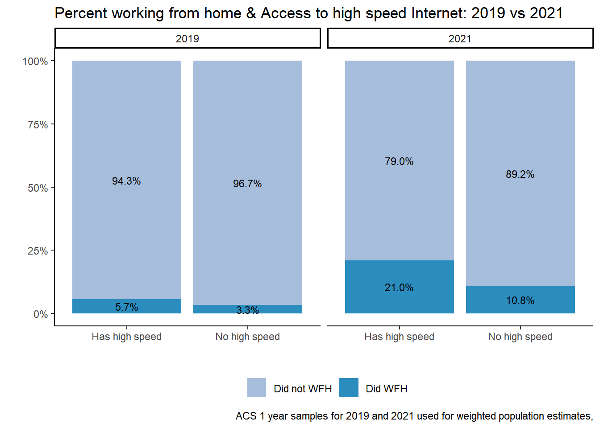
table %>% ggplot(aes(factor(CIHISPEED, labels = c("Has high speed", "No high speed")), y=n, fill = did_wfh_labels, group = YEAR)) +
geom_col(stat = "identity", position = "stack") +
facet_wrap(~YEAR)+
geom_text(aes(label = scales::percent(Prop)), position = position_stack(vjust=.5), size=3) +
theme_classic() + theme(legend.position = "bottom", legend.title = element_blank())+
labs(title ="Percent working from home & Access to high speed Internet: 2019 vs 2021",
x = "", y = "",
caption = "ACS 1 year samples for 2019 and 2021 used for weighted population estimates,") +scale_fill_manual(values = c("#a6bddb", "#2b8cbe"))
### Access to any type of internet ####
table <- #dstrata %>% factor(CIHISPEED,)
svytable(~CINETHH+did_wfh_labels+YEAR, design = dstrata)
table, , YEAR = 2019
did_wfh_labels
CINETHH Did not WFH Did WFH
1 5491609 306541
2 109151 3768
3 249879 7865
, , YEAR = 2021
did_wfh_labels
CINETHH Did not WFH Did WFH
1 4554421 1109860
2 94608 19191
3 139909 11784# proportion of each respondant's sex and if they worked from home for each year in sample
table <- table %>%
as_tibble() %>%
group_by(YEAR)%>%
mutate(Prop =round(n/sum(n), digits=3))%>%
arrange(did_wfh_labels, -n)
table# A tibble: 12 × 5
# Groups: YEAR [2]
CINETHH did_wfh_labels YEAR n Prop
<chr> <chr> <chr> <dbl> <dbl>
1 1 Did WFH 2021 1109860 0.187
2 1 Did WFH 2019 306541 0.05
3 2 Did WFH 2021 19191 0.003
4 3 Did WFH 2021 11784 0.002
5 3 Did WFH 2019 7865 0.001
6 2 Did WFH 2019 3768 0.001
7 1 Did not WFH 2019 5491609 0.89
8 1 Did not WFH 2021 4554421 0.768
9 3 Did not WFH 2019 249879 0.041
10 3 Did not WFH 2021 139909 0.024
11 2 Did not WFH 2019 109151 0.018
12 2 Did not WFH 2021 94608 0.016table %>% #filter(YEAR == 2021) %>%
ggplot(aes(factor(CINETHH, labels = c("Has Own Access", "Has Other Access", "No Access")), y=n, fill = did_wfh_labels,
group = YEAR
)) +
geom_col(stat = "identity", position = "stack") +
facet_wrap(~YEAR)+
geom_text(aes(label = scales::percent(as.numeric(ifelse(Prop>0.05,Prop, "")), accuracy = .1),accuracy = .1L ),position = position_stack(vjust=.5), size=3) +
theme_classic() +
theme(legend.position = "bottom", legend.title = element_blank())+
labs(title ="Percent working from home & Access to Internet: 2019 vs 2021",
x = "", y = "# of people",
caption = "ACS 1 year samples for 2019 and 2021 used for weighted population estimates,") + scale_y_continuous(labels = scales::comma)+coord_flip() + scale_fill_manual(values = c("#a6bddb", "#2b8cbe"))+
annotate("text", label = "< 3% of labor force", x = 2, y =1400000, size = 3, colour = "black") + annotate("text", label = "< 5% of labor force", x = 3, y =1400000, size = 3, colour = "black")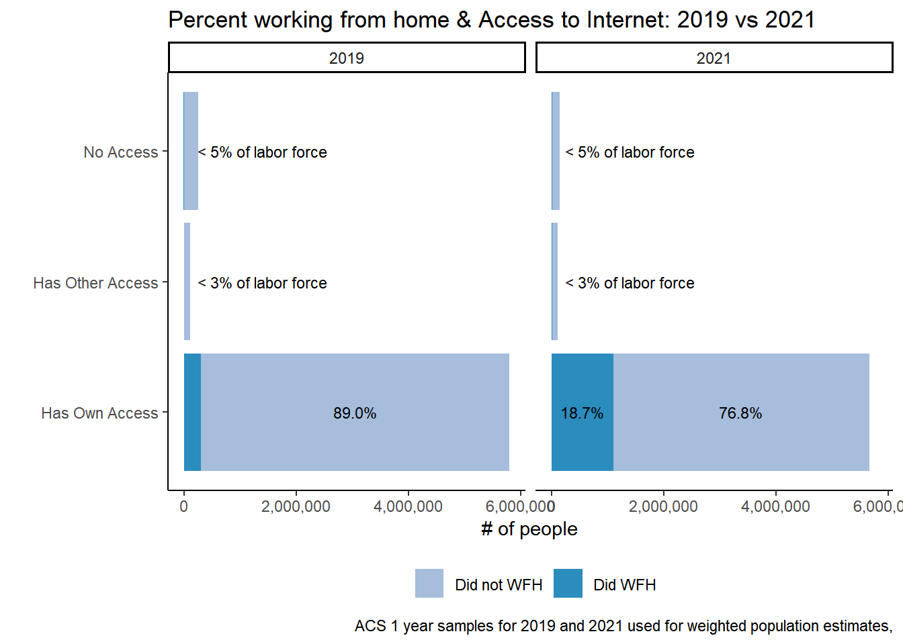
table %>% #filter(YEAR == 2021) %>%
ggplot(aes(did_wfh_labels, y=n, fill = factor(CINETHH, labels = c("Has Own Access", "Has Other Access", "No Access")),
group = YEAR
)) +
geom_col(stat = "identity", position = "stack") +
facet_wrap(~YEAR)+
geom_text(aes(label = scales::percent(Prop)), position = position_stack(vjust=.5), size=3) +
theme_classic() +
theme(legend.position = "bottom", legend.title = element_blank())+
labs(title ="Percent working from home & Access to Internet: 2019 vs 2021",
x = "", y = "# of People",
caption = "ACS 1 year samples for 2019 and 2021 used for weighted population estimates,") + scale_y_continuous(labels = scales::comma)+coord_flip()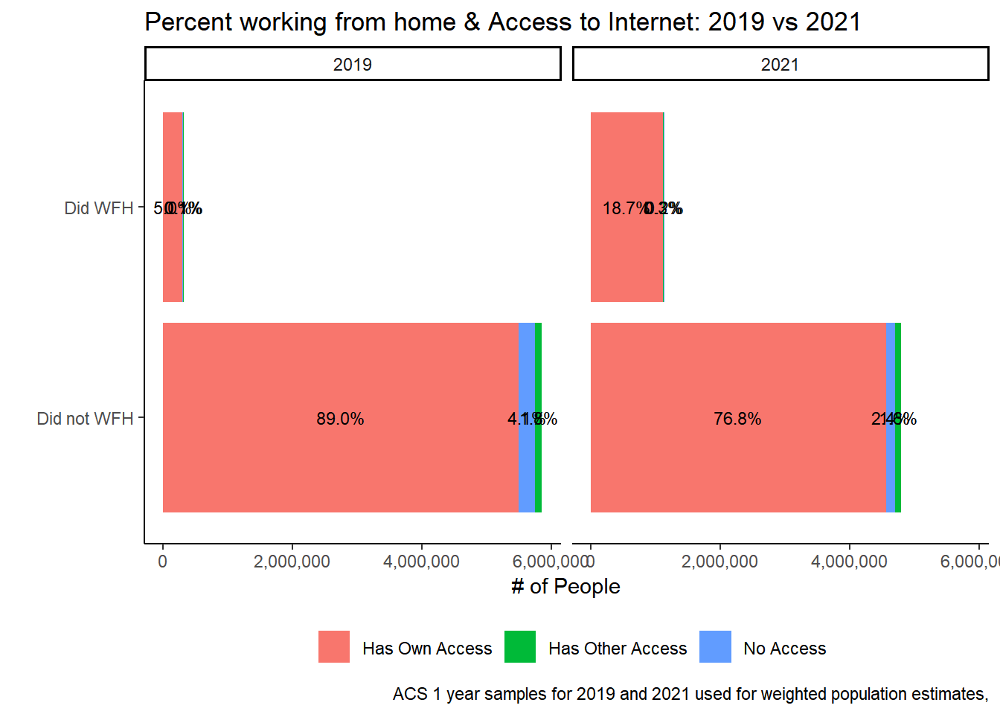
# table %>% ggplot(aes(factor(CINETHH, labels = c("Has Own Access", "Has Other Access", "No Access")), y=Prop, fill = did_wfh_labels, group = YEAR)) +
# geom_col(stat = "identity", position = "fill") +
# facet_wrap(~YEAR)+
# geom_text(aes(label = scales::percent(Prop)), position = position_fill(vjust=.5), size=3) +
# theme_classic() + theme(legend.position = "bottom", legend.title = element_blank())+
# labs(title ="Percent working from home & Access to Internet: 2019 vs 2021",
# x = "", y = "",
# caption = "ACS 1 year samples for 2019 and 2021 used for weighted population estimates,") + scale_y_continuous(labels = scales::percent)
# Access at home AND access to high speed internet.
table <-
svytable(~CIHISPEED+ CINETHH+did_wfh_labels+YEAR, design = dstrata)
table, , did_wfh_labels = Did not WFH, YEAR = 2019
CINETHH
CIHISPEED 1
10 4613288
20 878321
, , did_wfh_labels = Did WFH, YEAR = 2019
CINETHH
CIHISPEED 1
10 277027
20 29514
, , did_wfh_labels = Did not WFH, YEAR = 2021
CINETHH
CIHISPEED 1
10 3871147
20 683274
, , did_wfh_labels = Did WFH, YEAR = 2021
CINETHH
CIHISPEED 1
10 1027194
20 82666table <- table %>%
as_tibble() %>%
group_by(YEAR)%>%
mutate(Prop =round(n/sum(n), digits=3)) %>%
arrange(YEAR, did_wfh_labels)
table# A tibble: 8 × 6
# Groups: YEAR [2]
CIHISPEED CINETHH did_wfh_labels YEAR n Prop
<chr> <chr> <chr> <chr> <dbl> <dbl>
1 10 1 Did WFH 2019 277027 0.048
2 20 1 Did WFH 2019 29514 0.005
3 10 1 Did not WFH 2019 4613288 0.796
4 20 1 Did not WFH 2019 878321 0.151
5 10 1 Did WFH 2021 1027194 0.181
6 20 1 Did WFH 2021 82666 0.015
7 10 1 Did not WFH 2021 3871147 0.683
8 20 1 Did not WFH 2021 683274 0.121crosstab_3way(joined, YEAR, CIHISPEED, CINETHH, weight = PERWT, unwt_n = TRUE)| YEAR | CINETHH | Yes (Cable modem, fiber optic or DSL service) | No | n | unweighted_n |
| 2019 | Yes, with a subscription to an Internet Service | 84.2 | 15.8 | 6.05e+06 | 58332 |
| 2021 | Yes, with a subscription to an Internet Service | 86.3 | 13.7 | 5.98e+06 | 57808 |
In 2019, an estimated 277,000 people worked from home and had highspeed internet and 29,500 did not have high speed internet .
In 2021, an estimated1,027,000 people worked from home and had high speed internet and 83,000 did not have high speed internet.
- There is a chance that people realized that their internet was not as fast as they thought it was when they had multiple people using the internet at the same time during COVID-19.
table(joined$NCHILD)
0 1 2 3 4 5 6 7 8 9
70975 21828 19138 7485 1986 463 119 35 17 17 table(joined$NCHLT5)
0 1 2 3 4 5
108636 9881 3201 327 16 2